File: 000000.gt.txt (if the image is defective, simply delete all Arabic text and the line will be excluded)

حتى أفضت بها الحال إلى كل قلة وذلة، وتكشفت عن فقر مدقع. وقد كان
File: 000001.gt.txt (if the image is defective, simply delete all Arabic text and the line will be excluded)

عضد الدولة خطبها، فامتنعت ترفعا عليه، فحقد عليها، وما زال يعنف بها
File: 000002.gt.txt (if the image is defective, simply delete all Arabic text and the line will be excluded)

حتى عراها وهتكها، ثم ألزمها أن تختلف إلى دار القحاب فتتكسب ما
File: 000003.gt.txt (if the image is defective, simply delete all Arabic text and the line will be excluded)

تؤديه في المصادرة، فلما ضاق بها الأمر غرقت نفسها في دجلة، فلا قوة إلا
File: 000004.gt.txt (if the image is defective, simply delete all Arabic text and the line will be excluded)

سنة سبع وستين وثلاث مائة
File: 000005.gt.txt (if the image is defective, simply delete all Arabic text and the line will be excluded)

بالله.
File: 000006.gt.txt (if the image is defective, simply delete all Arabic text and the line will be excluded)

فيها جاء الخبر بهلاك أبي يعقوب يوسف بن الحسن الجنابي القرمطي
File: 000007.gt.txt (if the image is defective, simply delete all Arabic text and the line will be excluded)

صاحب هجر، فأغلقت أسواق الكوفة له ثلاثة أيام، وكان موازرا لعضد
File: 000008.gt.txt (if the image is defective, simply delete all Arabic text and the line will be excluded)

الدولة.
File: 000009.gt.txt (if the image is defective, simply delete all Arabic text and the line will be excluded)

وفيها عبر عز الدولة إلى الجانب الغربي على جسر عمله ورحل إلى
File: 000010.gt.txt (if the image is defective, simply delete all Arabic text and the line will be excluded)

قطربل، وتفرق عنه الديلم، ودخل أوائل أصحاب عضد الدولة بغداد،
File: 000011.gt.txt (if the image is defective, simply delete all Arabic text and the line will be excluded)

وخرج الطائع يتلقاه، وضربت له القباب المزينة، ودخل البلد. ثم إنه خرج
File: 000012.gt.txt (if the image is defective, simply delete all Arabic text and the line will be excluded)

لقتال عز الدولة، فالتقوا، فأخذ عز الدولة أسيرا، وقتله بعد ذلك.
File: 000013.gt.txt (if the image is defective, simply delete all Arabic text and the line will be excluded)

وخلع الطائع على عضد الدولة خلع السلطنة وتوجه بتاج مجوهر،
File: 000014.gt.txt (if the image is defective, simply delete all Arabic text and the line will be excluded)

وطوقه، وسوره، وقلده سيفا، وعقد له لواءين بيده، أحدهما مفضض على
File: 000015.gt.txt (if the image is defective, simply delete all Arabic text and the line will be excluded)

رسم الأمراء، والآخر مذهب على رسم ولاة العهود، ولم يعقد هذا اللواء
File: 000016.gt.txt (if the image is defective, simply delete all Arabic text and the line will be excluded)

الثاني لغيرة قبله، ولقبه تاج الملة، وكتب له عهد بحضرته وقرىء
File: 000017.gt.txt (if the image is defective, simply delete all Arabic text and the line will be excluded)

بحضرته، ولم تجر العادة بذلك، إنما كان يدفع العهد إلى الولاة بحضرة
File: 000018.gt.txt (if the image is defective, simply delete all Arabic text and the line will be excluded)

أمير المؤمنين، فإذا أخذه قال أمير المؤمنين : هذا عهدي إليك فاعمل به،
File: 000019.gt.txt (if the image is defective, simply delete all Arabic text and the line will be excluded)

وبعث إليه الطائع هدايا كثيرة، فبعث هو إلى الطائع تقادم من جملتها
File: 000020.gt.txt (if the image is defective, simply delete all Arabic text and the line will be excluded)

خمسون ألف دينار وألف ألف درهم، وخيل، وبغال، ومسك، وعنبر.
File: 000021.gt.txt (if the image is defective, simply delete all Arabic text and the line will be excluded)

وفيها زادت دجلة ببغداد حتى بلغت إحدى وعشرين ذراعا، وكادت
File: 000022.gt.txt (if the image is defective, simply delete all Arabic text and the line will be excluded)

بغداد تغرق، وغرقت أماكن.
File: 000023.gt.txt (if the image is defective, simply delete all Arabic text and the line will be excluded)

وفي ذي القعدة زلزلت سيراف، وسقطت البيوت، وهلك أكثر من
File: 000024.gt.txt (if the image is defective, simply delete all Arabic text and the line will be excluded)

مئتي إنسان تحتها.
File: 000025.gt.txt (if the image is defective, simply delete all Arabic text and the line will be excluded)

قال أبو محمد الكتاني(1) : تكلموا فيه، وتوفي في ربيع الآخر(2) .
File: 000026.gt.txt (if the image is defective, simply delete all Arabic text and the line will be excluded)

58 - محمد بن هانىء، أبو القاسم وأبو الحسن الأزدي
File: 000027.gt.txt (if the image is defective, simply delete all Arabic text and the line will be excluded)

الأندلسي.
File: 000028.gt.txt (if the image is defective, simply delete all Arabic text and the line will be excluded)

قيل : إنه من ذرية المهلب بن أبي صفرة.
File: 000029.gt.txt (if the image is defective, simply delete all Arabic text and the line will be excluded)

كان أبوه شاعرا أديبا، وأما هو فحامل لواء الشعر بالأندلس، ولد
File: 000030.gt.txt (if the image is defective, simply delete all Arabic text and the line will be excluded)

بأشبيلية، واشتغل بها. وكان حافظا لأشعار العرب وأخبارها، اتصل
File: 000031.gt.txt (if the image is defective, simply delete all Arabic text and the line will be excluded)

بصاحب إشبيلية وحظي عنده، فمن شعره :
File: 000032.gt.txt (if the image is defective, simply delete all Arabic text and the line will be excluded)

ولمـا التقـت ألحـاظنـا ووشـاتنـا وأعلن شوق الوشي ما الوشي كاتم
File: 000033.gt.txt (if the image is defective, simply delete all Arabic text and the line will be excluded)

تنفـس أنسـي مـن الخـدر نـاشـر فأسعد وحشي من السدر باغم
File: 000034.gt.txt (if the image is defective, simply delete all Arabic text and the line will be excluded)

وقلن :
File: 000035.gt.txt (if the image is defective, simply delete all Arabic text and the line will be excluded)

عشيـة لا آوي إلـى غيـر سـاجـع ببينـك حتـى كـل شـيء حمـائـم
File: 000036.gt.txt (if the image is defective, simply delete all Arabic text and the line will be excluded)

قطــا ســار سمعــت حفيفــه فقلت : قلوب العاشقين الحوائم
File: 000037.gt.txt (if the image is defective, simply delete all Arabic text and the line will be excluded)

وكان منهمكا في اللذات والمحرمات، متهما بدين الفلاسفة. ولقد
File: 000038.gt.txt (if the image is defective, simply delete all Arabic text and the line will be excluded)

هموا بقتله، فأشار عليه مخدومه بالاختفاء، فهرب من الأندلس إلى
File: 000039.gt.txt (if the image is defective, simply delete all Arabic text and the line will be excluded)

المغرب، واجتمع بالقائد جوهر فامتدحه، ثم اتصل بالمعز أبي تميم الذي
File: 000040.gt.txt (if the image is defective, simply delete all Arabic text and the line will be excluded)

بنى القاهرة، فامتدحه، فوصله، وأنعم عليه، ثم إنه شرب عند أناس
File: 000041.gt.txt (if the image is defective, simply delete all Arabic text and the line will be excluded)

وأصبح مخنوقا.
File: 000042.gt.txt (if the image is defective, simply delete all Arabic text and the line will be excluded)

وقيل : لم يعرف سبب موته، وهلك في رجب سنة اثنتين وستين عن
File: 000043.gt.txt (if the image is defective, simply delete all Arabic text and the line will be excluded)

نيف وأربعين سنة.
File: 000044.gt.txt (if the image is defective, simply delete all Arabic text and the line will be excluded)

وله «ديوان» كبير في المدح، وقد يفضي به المديح إلى الكفر، وليس
File: 000045.gt.txt (if the image is defective, simply delete all Arabic text and the line will be excluded)

يلحقه أحد في الشعر من أهل الأندلس، وهو نظير المتنبي(3) .
File: 000046.gt.txt (if the image is defective, simply delete all Arabic text and the line will be excluded)

59 - منصور بن محمد البغدادي المقرىء الحذاء.
File: 000047.gt.txt (if the image is defective, simply delete all Arabic text and the line will be excluded)

حدث عن البغوي، وابن أبي داود.
File: 000048.gt.txt (if the image is defective, simply delete all Arabic text and the line will be excluded)

روى عن البغوي، وابن صاعد. وعنه أبو نعيم الحافظ، وورخه هكذا
File: 000049.gt.txt (if the image is defective, simply delete all Arabic text and the line will be excluded)

في «تاريخ أصبهان»(1) . وقال في معجمه: قدم علينا أصبهان سنة خمس
File: 000050.gt.txt (if the image is defective, simply delete all Arabic text and the line will be excluded)

وستين، فيحرر هذا.
File: 000051.gt.txt (if the image is defective, simply delete all Arabic text and the line will be excluded)

31 - أحمد بن محمد بن عمارة بن أحمد، أبو الحارث الليثي
File: 000052.gt.txt (if the image is defective, simply delete all Arabic text and the line will be excluded)

الكناني، مولاهم، الدمشقي.
File: 000053.gt.txt (if the image is defective, simply delete all Arabic text and the line will be excluded)

سمع أحمد بن محمد بن يحيى بن حمزة، وزكريا السجزي، ومحمد
File: 000054.gt.txt (if the image is defective, simply delete all Arabic text and the line will be excluded)

بن يزيد بن عبد الصمد، وأحمد بن إبراهيم البسري، وإبراهيم بن دحيم،
File: 000055.gt.txt (if the image is defective, simply delete all Arabic text and the line will be excluded)

وجماعة. وعنه ابن جميع(2) ، وتمام، وعبدالرحمن بن أبي نصر، وأحمد
File: 000056.gt.txt (if the image is defective, simply delete all Arabic text and the line will be excluded)

بن محمد بن الحاج الإشبيلي، عبدالوهاب الميداني.
File: 000057.gt.txt (if the image is defective, simply delete all Arabic text and the line will be excluded)

وتوفي في ربيع الآخر في عشر التسعين(3) .
File: 000058.gt.txt (if the image is defective, simply delete all Arabic text and the line will be excluded)

32 - إبراهيم بنعبيد الله المعافري الإشبيلي.
File: 000059.gt.txt (if the image is defective, simply delete all Arabic text and the line will be excluded)

سمع من: أحمد بن خالد، ومحمد بن فطيس. وكان محدثا لغويا
File: 000060.gt.txt (if the image is defective, simply delete all Arabic text and the line will be excluded)

بصيرا بالشعر ؛ قاله ابن الفرضي (4) .
File: 000061.gt.txt (if the image is defective, simply delete all Arabic text and the line will be excluded)

33 - إبراهيم بن محمد بن يحيى بن سختويه النيسابوري، الشيخ
File: 000062.gt.txt (if the image is defective, simply delete all Arabic text and the line will be excluded)

أبو إسحاق المزكي.
File: 000063.gt.txt (if the image is defective, simply delete all Arabic text and the line will be excluded)

قال الحاكم: هو شيخ نيسابور في عصره، وكان من العباد المجتهدين
File: 000064.gt.txt (if the image is defective, simply delete all Arabic text and the line will be excluded)

الحجاجين المنفقين على العلماء والفقراء. سمع ابن خزيمة، وأبا العباس
File: 000065.gt.txt (if the image is defective, simply delete all Arabic text and the line will be excluded)

السراج، وأحمد بن محمد الماسرجسي، وأبا العباس الأزهري،
File: 000066.gt.txt (if the image is defective, simply delete all Arabic text and the line will be excluded)

وعبدالرحمن بن أبي حاتم الرازي، ومحمد بن هارون الحضرمي، وأبا
File: 000067.gt.txt (if the image is defective, simply delete all Arabic text and the line will be excluded)

العباس الدغولي، وخلقا سواهم. وأملى عدة سنين، وكنا نعد في مجلسه
File: 000068.gt.txt (if the image is defective, simply delete all Arabic text and the line will be excluded)

أربعة عشر محدثا، منهم أبو العباس الأصم، ومحمد بن يعقوب بن
File: 000069.gt.txt (if the image is defective, simply delete all Arabic text and the line will be excluded)

الأخرم.
File: 000070.gt.txt (if the image is defective, simply delete all Arabic text and the line will be excluded)

فيما قيل : وسمع من محمد بن عثمان بن أبي شيبة، وموسى بن هارون،
File: 000071.gt.txt (if the image is defective, simply delete all Arabic text and the line will be excluded)

والحسين بن عبدالله الخرقي، وأحمد بن محمد بن الجعد الوشاء، وأبي
File: 000072.gt.txt (if the image is defective, simply delete all Arabic text and the line will be excluded)

خليفة الفضل بن الحباب، وجعفر الفريابي، وجماعة. وعنه ابن الجنيد
File: 000073.gt.txt (if the image is defective, simply delete all Arabic text and the line will be excluded)

الخطبي، وبشرى الفاتني، وغيرهما. وتفقه عليه أبو عبدالله ابن بطة، وأبو
File: 000074.gt.txt (if the image is defective, simply delete all Arabic text and the line will be excluded)

إسحاق بن شاقلا، وأبو حفص العكبري، وأبو الحسن التميمي، وأبو حفص
File: 000075.gt.txt (if the image is defective, simply delete all Arabic text and the line will be excluded)

البرمكي، وأبو عبدالله بن حامد.
File: 000076.gt.txt (if the image is defective, simply delete all Arabic text and the line will be excluded)

وكان كبير القدر، صحيح النقل، بارعا في نقل مذهبه.
File: 000077.gt.txt (if the image is defective, simply delete all Arabic text and the line will be excluded)

قال أبو حفص البرمكي: سمعت أبا بكر عبدالعزيز يقول: سمع مني
File: 000078.gt.txt (if the image is defective, simply delete all Arabic text and the line will be excluded)

شيخنا أبو بكر الخلال نحو عشرين مسألة وأثبتها في كتابه.
File: 000079.gt.txt (if the image is defective, simply delete all Arabic text and the line will be excluded)

وقال أبو يعلى القاضي : كان لأبي بكر عبدالعزيز مصنفات حسنة منها
File: 000080.gt.txt (if the image is defective, simply delete all Arabic text and the line will be excluded)

«المقنع» وهو نحو مئة جزء، وكتاب «الشافي» نحو ثمانين جزءا، وكتاب
File: 000081.gt.txt (if the image is defective, simply delete all Arabic text and the line will be excluded)

«زاد المسافر» وكتاب «الخلاف مع الشافعي» وكتاب «مختصر السنة». قال :
File: 000082.gt.txt (if the image is defective, simply delete all Arabic text and the line will be excluded)

وتوفي في شوال سنة ثلاث وستين، وله ثمان وسبعون سنة في سن شيخه
File: 000083.gt.txt (if the image is defective, simply delete all Arabic text and the line will be excluded)

الخلال، وسن شيخ شيخه المروذي، وسن أحمد بن حنبل. وروي عنه أنه
File: 000084.gt.txt (if the image is defective, simply delete all Arabic text and the line will be excluded)

قال في مرضه : أنا عندكم إلى يوم الجمعة، فمات يوم الجمعة، رحمه الله.
File: 000085.gt.txt (if the image is defective, simply delete all Arabic text and the line will be excluded)

ويذكر عنه زهد وقنوع وعبادة.
File: 000086.gt.txt (if the image is defective, simply delete all Arabic text and the line will be excluded)

وقد ذكر أبو يعلى أنه كان معظما في النفوس، متقدما عند الدولة،
File: 000087.gt.txt (if the image is defective, simply delete all Arabic text and the line will be excluded)

بارعا في مذهب أحمد.
File: 000088.gt.txt (if the image is defective, simply delete all Arabic text and the line will be excluded)

أنبأنا المؤمل ابن البالسي، قال: أخبرنا أبو اليمن الكندي، قال :
File: 000089.gt.txt (if the image is defective, simply delete all Arabic text and the line will be excluded)

أخبرنا الشيباني، قال : أخبرنا أبو بكر الخطيب، قال(1) : حدثنا أحمد بن
File: 000090.gt.txt (if the image is defective, simply delete all Arabic text and the line will be excluded)

الجنيد الخطبي، قال : حدثنا أبو بكر عبدالعزيز بن جعفر، قال : حدثنا علي
File: 000091.gt.txt (if the image is defective, simply delete all Arabic text and the line will be excluded)

بن طيفور، قال : حدثنا قتيبة، قال : حدثنا عبدالوارث، عن عبدالرحمن بن
File: 000092.gt.txt (if the image is defective, simply delete all Arabic text and the line will be excluded)

إسحاق، عن النعمان بن سعد، عن علي، قال : قال رسول الله صعلم : «خيركم
File: 000093.gt.txt (if the image is defective, simply delete all Arabic text and the line will be excluded)

من تعلم القرآن وعلمه»(2) .
File: 000094.gt.txt (if the image is defective, simply delete all Arabic text and the line will be excluded)

وفيها كان الحرب شديدا بينهم وبين الأعراب القرامطة الذين ملكوا
File: 000095.gt.txt (if the image is defective, simply delete all Arabic text and the line will be excluded)

الشام، وحاصروا المعز بمصر مدة، ثم ترحلوا شبه منهزمين ودخلوا إلى
File: 000096.gt.txt (if the image is defective, simply delete all Arabic text and the line will be excluded)

بلاد الحسا والقطيف.
File: 000097.gt.txt (if the image is defective, simply delete all Arabic text and the line will be excluded)

وقدم إلى الشام نائب المعز.
File: 000098.gt.txt (if the image is defective, simply delete all Arabic text and the line will be excluded)

سنة أربع وستين وثلاث مئة
File: 000099.gt.txt (if the image is defective, simply delete all Arabic text and the line will be excluded)

في المحرم أوقع العيارون حريقا بالخشابين مبدؤه من باب الشعير،
File: 000100.gt.txt (if the image is defective, simply delete all Arabic text and the line will be excluded)

فاحترق أكثر هذا السوق، وهلك شيء كثير، واستفحل أمر العيارين ببغداد
File: 000101.gt.txt (if the image is defective, simply delete all Arabic text and the line will be excluded)

حتى ركبوا الخيل وتلقبوا بالقواد، وغلبوا على الأمور وأخذوا الخفارة من
File: 000102.gt.txt (if the image is defective, simply delete all Arabic text and the line will be excluded)

الأسواق والدروب، وكان فيهم أسود الزبد كان يأوي قنطرة الزبد ويشحذ
File: 000103.gt.txt (if the image is defective, simply delete all Arabic text and the line will be excluded)

وهو عريان، فلما كثر الفساد رأى هذا الأسود من هو أضعف منه قد أخذ
File: 000104.gt.txt (if the image is defective, simply delete all Arabic text and the line will be excluded)

السيف، فطلب الأسود سيفا ونهب وأغار، وحف به طائفة وتقوى، وأخذ
File: 000105.gt.txt (if the image is defective, simply delete all Arabic text and the line will be excluded)

الأموال، واشترى جارية بألف دينار، ثم راودها فتمنعت، فقال: ما تكرهين
File: 000106.gt.txt (if the image is defective, simply delete all Arabic text and the line will be excluded)

مني؟ قالت: أكرهك كلك، قال: ما تحبين؟ قالت: تبيعني. قال: أو خيرا
File: 000107.gt.txt (if the image is defective, simply delete all Arabic text and the line will be excluded)

من ذلك، فحملها إلى القاضي وأعتقها، ووهبها ألف دينار، فعجب الناس
File: 000108.gt.txt (if the image is defective, simply delete all Arabic text and the line will be excluded)

من سماحته، ثم خرج إلى الشام فهلك هناك.
File: 000109.gt.txt (if the image is defective, simply delete all Arabic text and the line will be excluded)

وقطعت خطبة الطائع لله ببغداد وغيرها من يوم العشرين من جمادى
File: 000110.gt.txt (if the image is defective, simply delete all Arabic text and the line will be excluded)

الأولى، إلى أن أعيدت في عاشر رجب، فلم يخطب في هذه الجمع لإمام
File: 000111.gt.txt (if the image is defective, simply delete all Arabic text and the line will be excluded)

وذلك لأجل شغب وقع بينه وبين عضد الدولة.
File: 000112.gt.txt (if the image is defective, simply delete all Arabic text and the line will be excluded)

وكان عضد الدولة قد قدم العراق فأعجبه ملكها، فعمل عليها،
File: 000113.gt.txt (if the image is defective, simply delete all Arabic text and the line will be excluded)

واستمال الجند، فشغبوا على عز الدولة، فأغلق بابه، وكتب عضد الدولة
File: 000114.gt.txt (if the image is defective, simply delete all Arabic text and the line will be excluded)

عن الطائع في الآفاق باستقرار الأمر لعضد الدولة، وخلع عضد الدولة على
File: 000115.gt.txt (if the image is defective, simply delete all Arabic text and the line will be excluded)

محمد بن بقية وزير عز الدولة، ثم اضطربت الأمور على عضد الدولة، ولم
File: 000116.gt.txt (if the image is defective, simply delete all Arabic text and the line will be excluded)

يبق بيده غير بغداد، فنفذ إلى والده ركن الدولة يعلمه أنه قد خاطر بنفسه
File: 000117.gt.txt (if the image is defective, simply delete all Arabic text and the line will be excluded)

وجنده، وقد هذب مملكة العراق واستعاد الطائع إلى داره، وأن عز الدولة
File: 000118.gt.txt (if the image is defective, simply delete all Arabic text and the line will be excluded)

عاص لا يقيم دولة، فلما بلغه ذلك غضب، وقال للرسول: قل له: خرجت
File: 000119.gt.txt (if the image is defective, simply delete all Arabic text and the line will be excluded)

في نصرة أحمد ابن أخي أو في الطمع في مملكته؟ فأفرج عضد الدولة عن
File: 000120.gt.txt (if the image is defective, simply delete all Arabic text and the line will be excluded)

184
File: 000121.gt.txt (if the image is defective, simply delete all Arabic text and the line will be excluded)

الكديمي، وإسماعيل القاضي، ومحمد بن غالب تمتام، ومحمد بن سليمان
File: 000122.gt.txt (if the image is defective, simply delete all Arabic text and the line will be excluded)

الباغندي، وجماعة، وانتخب عليه الدارقطني. روى عنه ابن رزقويه، وأبو
File: 000123.gt.txt (if the image is defective, simply delete all Arabic text and the line will be excluded)

بكر البرقاني، وأبو نعيم، وعبيدالله بن أبي حفص بن شاهين.
File: 000124.gt.txt (if the image is defective, simply delete all Arabic text and the line will be excluded)

قال أبو نعيم : كان يقول لنا الدارقطني: اقتصروا من حديث أبي بحر
File: 000125.gt.txt (if the image is defective, simply delete all Arabic text and the line will be excluded)

على ما انتخبته حسب.
File: 000126.gt.txt (if the image is defective, simply delete all Arabic text and the line will be excluded)

وقال ابن أبي الفوارس : فيه نظر.
File: 000127.gt.txt (if the image is defective, simply delete all Arabic text and the line will be excluded)

وقال البرقاني : حضرت يوما عند أبي بحر، فقال لنا ابن السرخسي :
File: 000128.gt.txt (if the image is defective, simply delete all Arabic text and the line will be excluded)

سأريكم أن الشيخ كذاب، ثم قال له : فلان بن فلان ينزل المكان الفلاني،
File: 000129.gt.txt (if the image is defective, simply delete all Arabic text and the line will be excluded)

سمعت منه؟ قال : نعم. قال البرقاني : ولم يكن لذاك وجود.
File: 000130.gt.txt (if the image is defective, simply delete all Arabic text and the line will be excluded)

قال ابن أبي الفوارس : توفي لأربع بقين من جمادى الأولى. قال :
File: 000131.gt.txt (if the image is defective, simply delete all Arabic text and the line will be excluded)

ومولده سنة ست وستين ومئتين قال : وكان مخلطا، وله أصول جياد، وله
File: 000132.gt.txt (if the image is defective, simply delete all Arabic text and the line will be excluded)

شيء رديء.
File: 000133.gt.txt (if the image is defective, simply delete all Arabic text and the line will be excluded)

قلت : روى ابن عبدالدائم حديثه بعلو عن ابن المعطوش(1) .
File: 000134.gt.txt (if the image is defective, simply delete all Arabic text and the line will be excluded)

52 - محمد بن أبي الهيثم خالد بن الحسن، أبو بكر المطوعي
File: 000135.gt.txt (if the image is defective, simply delete all Arabic text and the line will be excluded)

البخاري.
File: 000136.gt.txt (if the image is defective, simply delete all Arabic text and the line will be excluded)

سمع مسبح بن محمد، وابن خزيمة، والباغندي، وطبقتهم. وعنه
File: 000137.gt.txt (if the image is defective, simply delete all Arabic text and the line will be excluded)

الحاكم وطائفة.
File: 000138.gt.txt (if the image is defective, simply delete all Arabic text and the line will be excluded)

53 - محمد بن العباس بن أحمد، أبو بكر المسعودي الإستراباذي
File: 000139.gt.txt (if the image is defective, simply delete all Arabic text and the line will be excluded)

الفقيه.
File: 000140.gt.txt (if the image is defective, simply delete all Arabic text and the line will be excluded)

رحل وسمع أبا يعلى الموصلي، ومحمد بن الحسين الخثعمي
File: 000141.gt.txt (if the image is defective, simply delete all Arabic text and the line will be excluded)

الكوفي، وطبقتهما. وعنه أبو سعد الإدريسي، وقال : لا يحتج به.
File: 000142.gt.txt (if the image is defective, simply delete all Arabic text and the line will be excluded)

بقي إلى هذه السنة.
File: 000143.gt.txt (if the image is defective, simply delete all Arabic text and the line will be excluded)

54 - محمد بن عبدالله بن محمد، الفقيه أبو جعفر البلخي
File: 000144.gt.txt (if the image is defective, simply delete all Arabic text and the line will be excluded)

الحنفي.
File: 000145.gt.txt (if the image is defective, simply delete all Arabic text and the line will be excluded)

سنة ثلاث وستين وثلاث مئة
File: 000146.gt.txt (if the image is defective, simply delete all Arabic text and the line will be excluded)

61 - أحمد بن محمد بن عبدالبر، أبو عثمان التجيبي القرطبي،
File: 000147.gt.txt (if the image is defective, simply delete all Arabic text and the line will be excluded)

يعرف بابن الكشكيناني.
File: 000148.gt.txt (if the image is defective, simply delete all Arabic text and the line will be excluded)

حج، وسمع أبا سعيد ابن الأعرابي ورجع، وتوفي في شوال(1) .
File: 000149.gt.txt (if the image is defective, simply delete all Arabic text and the line will be excluded)

62 - أحمد بن محمد بن علي بن إبراهيم النرسي البغدادي.
File: 000150.gt.txt (if the image is defective, simply delete all Arabic text and the line will be excluded)

توفي بالرملة وله إحدى وثمانون سنة.
File: 000151.gt.txt (if the image is defective, simply delete all Arabic text and the line will be excluded)

63 - إبراهيم بن سليمان بن عدي الشافعي العسكري المصري.
File: 000152.gt.txt (if the image is defective, simply delete all Arabic text and the line will be excluded)

توفي في رجب. سمع أبا عبدالرحمن النسائي.
File: 000153.gt.txt (if the image is defective, simply delete all Arabic text and the line will be excluded)

64 - إسماعيل بن محمد بن علان الخولاني المصري المؤدب.
File: 000154.gt.txt (if the image is defective, simply delete all Arabic text and the line will be excluded)

يروي عن النسائي، والحسن بن غليب.
File: 000155.gt.txt (if the image is defective, simply delete all Arabic text and the line will be excluded)

65 - أصبغ بن قاسم بن أصبغ، أبو القاسم، من أهل إستجة.
File: 000156.gt.txt (if the image is defective, simply delete all Arabic text and the line will be excluded)

سمع محمد بن عمر بن لبابة، وأحمد بن خالد بن الجباب، وحج
File: 000157.gt.txt (if the image is defective, simply delete all Arabic text and the line will be excluded)

فسمع من أبي جعفر العقيلي، وابن الاعرابي، وسمع «صحيح» البخاري من
File: 000158.gt.txt (if the image is defective, simply delete all Arabic text and the line will be excluded)

صالح بن محمد الأصبهاني، عن إبراهيم بن معقل النسفي.
File: 000159.gt.txt (if the image is defective, simply delete all Arabic text and the line will be excluded)

ولي قضاء إستجة، فأساء السيرة وشكوه. وكان جسيما وسيما.
File: 000160.gt.txt (if the image is defective, simply delete all Arabic text and the line will be excluded)

66 - ثابت بن سنان بن ثابت بن قرة، أبو الحسن الحراني الأصل
File: 000161.gt.txt (if the image is defective, simply delete all Arabic text and the line will be excluded)

الصابي، ثم البغدادي.
File: 000162.gt.txt (if the image is defective, simply delete all Arabic text and the line will be excluded)

كان يلحق بأبيه في صناعة الطب، وصنف تاريخا كبيرا على الحوادث
File: 000163.gt.txt (if the image is defective, simply delete all Arabic text and the line will be excluded)

والوقائع التي تمت في زمانه، وخدم بالطب الراضي بالله وجماعة من
File: 000164.gt.txt (if the image is defective, simply delete all Arabic text and the line will be excluded)

الخلفاء قبله.
File: 000165.gt.txt (if the image is defective, simply delete all Arabic text and the line will be excluded)

وقال في «تاريخه» : لما سلم أبو علي بن مقلة إلى الوزير عبدالرحمن
File: 000166.gt.txt (if the image is defective, simply delete all Arabic text and the line will be excluded)

بن عيسى من جهة الراضي بالله، في سنة أربع وعشرين وثلاث مئة حمله
File: 000167.gt.txt (if the image is defective, simply delete all Arabic text and the line will be excluded)

إلى داره، ثم ضرب ابن مقلة بالمقارع في دار عبدالرحمن، وأخذ خطه
File: 000168.gt.txt (if the image is defective, simply delete all Arabic text and the line will be excluded)

211
File: 000169.gt.txt (if the image is defective, simply delete all Arabic text and the line will be excluded)

بكر، والموصل، والحرمين، واليمن، ودمشق، وحمص، وجند قنسرين،
File: 000170.gt.txt (if the image is defective, simply delete all Arabic text and the line will be excluded)

والعواصم، ومصر، والإسكندرية، وجندي فلسطين، والأردن، وأعمال
File: 000171.gt.txt (if the image is defective, simply delete all Arabic text and the line will be excluded)

ذلك كلها، ومايجري من ذلك من الإشراف على من يختاره لنقائه(1) من
File: 000172.gt.txt (if the image is defective, simply delete all Arabic text and the line will be excluded)

العباسيين بالكوفة، وسقي الفرات، وأعمال ذلك، وما قلده إياه من قضاء
File: 000173.gt.txt (if the image is defective, simply delete all Arabic text and the line will be excluded)

القضاة، وتصفح أحوال الحكام، والإستشراف على ما يجري عليه أمر
File: 000174.gt.txt (if the image is defective, simply delete all Arabic text and the line will be excluded)

الأحكام في سائر النواحي والأمصار التي تشتمل عليها المملكة، وتنتهي
File: 000175.gt.txt (if the image is defective, simply delete all Arabic text and the line will be excluded)

إليها الدعوة، وإقرار من يحمد هديه وطريقته، والاستبدال بمن يذم سمته
File: 000176.gt.txt (if the image is defective, simply delete all Arabic text and the line will be excluded)

وسجيته نظرا لنجبة مكانه، واحتياطا للخاصة والعامة، وحنوا على الملة
File: 000177.gt.txt (if the image is defective, simply delete all Arabic text and the line will be excluded)

والذمة عن علم بأنه المقدم في بيته وشرفه، المبرز في عفافه، المزكي في
File: 000178.gt.txt (if the image is defective, simply delete all Arabic text and the line will be excluded)

دينه وأمانته، الموصوف في ورعه ونزاهته، المشار إليه بالعلم والحجى،
File: 000179.gt.txt (if the image is defective, simply delete all Arabic text and the line will be excluded)

المجتمع عليه في الحلم والنهى، البعيد من الأدناس، اللباس من التقى
File: 000240.gt.txt (if the image is defective, simply delete all Arabic text and the line will be excluded)

سواه. وربما كان أبو عثمان يقول : أبو عمرو خلفي من بعدي.
File: 000241.gt.txt (if the image is defective, simply delete all Arabic text and the line will be excluded)

238
File: 000242.gt.txt (if the image is defective, simply delete all Arabic text and the line will be excluded)

وأبو الحسن علي بن موسى بن السمسار.
File: 000243.gt.txt (if the image is defective, simply delete all Arabic text and the line will be excluded)

وعاش إلى سنة أربع وستين وانقطع خبره(1).
File: 000244.gt.txt (if the image is defective, simply delete all Arabic text and the line will be excluded)

98 - أحمد بن محمد بن إسحاق بن إبراهيم بن أسباط، مولى
File: 000245.gt.txt (if the image is defective, simply delete all Arabic text and the line will be excluded)

جعفر بن أبي طالب، أبو بكر ابن السني الدينوري الحافظ.
File: 000246.gt.txt (if the image is defective, simply delete all Arabic text and the line will be excluded)

سمع أبا عبدالرحمن النسائي، وعمر بن أبي غيلان البغدادي، وأبا
File: 000247.gt.txt (if the image is defective, simply delete all Arabic text and the line will be excluded)

خليفة، وزكريا الساجي، وأبا يعقوب المنجنيقي، وعبدالله بن زيدان
File: 000248.gt.txt (if the image is defective, simply delete all Arabic text and the line will be excluded)

البجلي، وأبا عروبة، وجماهر بن محمد الزملكاني، وطبقتهم بمصر،
File: 000249.gt.txt (if the image is defective, simply delete all Arabic text and the line will be excluded)

والشام، والعراق، والجزيرة. وعنه أبو علي حمد بن عبدالله الأصبهاني،
File: 000250.gt.txt (if the image is defective, simply delete all Arabic text and the line will be excluded)

ومحمد بن علي العلوي، وعلي بن عمر الأسداباذي، وأحمد بن الحسين
File: 000251.gt.txt (if the image is defective, simply delete all Arabic text and the line will be excluded)

الكسار.
File: 000252.gt.txt (if the image is defective, simply delete all Arabic text and the line will be excluded)

قال القاضي أبو زرعة روح بن محمد سبط ابن السني : سمعت عمي
File: 000253.gt.txt (if the image is defective, simply delete all Arabic text and the line will be excluded)

علي بن أحمد بن محمد يقول : كان أبي رحمه الله يكتب الحديث، فوضع
File: 000254.gt.txt (if the image is defective, simply delete all Arabic text and the line will be excluded)

القلم في أنبوبة المحبرة، ورفع يديه يدعو الله تعالى، فمات رحمه الله،
File: 000255.gt.txt (if the image is defective, simply delete all Arabic text and the line will be excluded)

وذلك في آخر سنة أربع وستين.
File: 000256.gt.txt (if the image is defective, simply delete all Arabic text and the line will be excluded)

قلت: كان دينا خيرا، صنف في «القناعة» ، وفي «عمل يوم وليلة»،
File: 000257.gt.txt (if the image is defective, simply delete all Arabic text and the line will be excluded)

وغير ذلك، واختصر «سنن النسائي» ، وعاش بضعا وثمانين سنة(2).
File: 000258.gt.txt (if the image is defective, simply delete all Arabic text and the line will be excluded)

99 - أحمد بن محمد بن إبراهيم، أبو حامد النيسابوري الواعظ
File: 000259.gt.txt (if the image is defective, simply delete all Arabic text and the line will be excluded)

المقرىء.
File: 000260.gt.txt (if the image is defective, simply delete all Arabic text and the line will be excluded)

رجل فاضل عالم، ذكره الحاكم، فقال : كان يعطي كل نوع من أنواع
File: 000261.gt.txt (if the image is defective, simply delete all Arabic text and the line will be excluded)

العلوم حقه، وكتب الحديث الكثير، ولم يحدث تورعا، ولزم مسجده
File: 000262.gt.txt (if the image is defective, simply delete all Arabic text and the line will be excluded)

قلت : روى عنه الحاكم حكاية.
File: 000263.gt.txt (if the image is defective, simply delete all Arabic text and the line will be excluded)

224
File: 000264.gt.txt (if the image is defective, simply delete all Arabic text and the line will be excluded)

هذا أيها الملك، أهذا هو الله عز وجل؟ فالتفت إلى عبدالعزيز بن يوسف
File: 000265.gt.txt (if the image is defective, simply delete all Arabic text and the line will be excluded)

وقال له: فهمه وقل له: هذا خليفة الله في الأرض، ثم استمر يمشي ويقبل
File: 000266.gt.txt (if the image is defective, simply delete all Arabic text and the line will be excluded)

الأرض سبع مرات، فالتفت الطائع إلى خالص الخادم وقال: استذنه،
File: 000267.gt.txt (if the image is defective, simply delete all Arabic text and the line will be excluded)

فصعد عضد الدولة، فقبل الأرض دفعتين، فقال له: ادن إلي ادن إلي، فدنا
File: 000268.gt.txt (if the image is defective, simply delete all Arabic text and the line will be excluded)

فقبل رجله، وثنى الطائع يمينه عليه، وأمره، فجلس على كرسي، بعد أن
File: 000269.gt.txt (if the image is defective, simply delete all Arabic text and the line will be excluded)

كرر عليه: اجلس، وهو يستعفي فقال له: أقسمت لتجلسن، فقبل
File: 000270.gt.txt (if the image is defective, simply delete all Arabic text and the line will be excluded)

الكرسي وجلس، وقال له: ما كان أشوقنا إليك وأتوقنا إلى رؤيتك
File: 000271.gt.txt (if the image is defective, simply delete all Arabic text and the line will be excluded)

ومفاوضتك، فقال: عذري معلوم، وقال: نيتك موثوق بها، وعقيدتك
File: 000272.gt.txt (if the image is defective, simply delete all Arabic text and the line will be excluded)

مسكون إليها، فأومأ برأسه، ثم قال له الطائع: قد رأيت أن أفوض إليك ما
File: 000273.gt.txt (if the image is defective, simply delete all Arabic text and the line will be excluded)

وكل الله إلي من أمور الرعية في شرق الأرض وغربها، وتدبيرها في جميع
File: 000274.gt.txt (if the image is defective, simply delete all Arabic text and the line will be excluded)

جهاتها، سوى خاصتي وأسبابي، فتول ذلك مستخيرا بالله. قال: يعينني الله
File: 000275.gt.txt (if the image is defective, simply delete all Arabic text and the line will be excluded)

على طاعة مولانا وخدمته، وأريد وجوه القواد أن يسمعوا لفظ أمير
File: 000276.gt.txt (if the image is defective, simply delete all Arabic text and the line will be excluded)

المؤمنين. فقال الطائع: هاتوا الحسين بن موسى، ومحمد بن عمرو بن
File: 000277.gt.txt (if the image is defective, simply delete all Arabic text and the line will be excluded)

معروف، وابن أم شيبان، والزينبي، فقدموا، فأعاد الطائع له القول
File: 000278.gt.txt (if the image is defective, simply delete all Arabic text and the line will be excluded)

بالتفويض، ثم التفت إلى طريف الخادم، فقال: يا طريف تفاض عليه
File: 000279.gt.txt (if the image is defective, simply delete all Arabic text and the line will be excluded)

الخلع ويتوج، فنهض إلى الرواق وألبس الخلع، وخرج قادما ليقبل
File: 000280.gt.txt (if the image is defective, simply delete all Arabic text and the line will be excluded)

الأرض، فلم يطق لكثرة ما عليه، فقال الطائع: حسبك، حسبك! وأمره
File: 000281.gt.txt (if the image is defective, simply delete all Arabic text and the line will be excluded)

بالجلوس، ثم استدعى الطائع تقديم ألويته، فقدم لواءين، واستخار الله
File: 000282.gt.txt (if the image is defective, simply delete all Arabic text and the line will be excluded)

تعالى، وصلى على رسول الله صعلم، وعقدهما، ثم قال: يقرأ كتابه، فقرىء،
File: 000283.gt.txt (if the image is defective, simply delete all Arabic text and the line will be excluded)

فقال له الطائع: خار الله لك ولنا وللمسلمين، آمرك بما أمرك الله به،
File: 000284.gt.txt (if the image is defective, simply delete all Arabic text and the line will be excluded)

وأنهاك عما نهاك الله عنه، وأبرأ إلى الله مما سوى ذلك، انهض على اسم
File: 000285.gt.txt (if the image is defective, simply delete all Arabic text and the line will be excluded)

الله، ثم أخذ الطائع سيفا كان بين المخدتين فقلده به مضافا إلى السيف
File: 000286.gt.txt (if the image is defective, simply delete all Arabic text and the line will be excluded)

الذي قلده مع الخلعة، وخرج من باب الخاصة، وسار في البلد، ثم بعث
File: 000287.gt.txt (if the image is defective, simply delete all Arabic text and the line will be excluded)

إليه الطائع هدية فيها غلالة قصب، وصينية ذهب، وخردادين بلور فيه
File: 000288.gt.txt (if the image is defective, simply delete all Arabic text and the line will be excluded)

شراب، وعلى فم الخردادين خرقة حرير مختومة وكأس بلور، وأشياء من
File: 000289.gt.txt (if the image is defective, simply delete all Arabic text and the line will be excluded)

هذا الفن، فجاء من الغد أبو نصر الخازن ومعه من الأموال نحو ما ذكرنا في
File: 000290.gt.txt (if the image is defective, simply delete all Arabic text and the line will be excluded)

دخوله الأول في السنة الماضية. وجلس للهناء، فقال أبو إسحاق الصابي
File: 000291.gt.txt (if the image is defective, simply delete all Arabic text and the line will be excluded)

191
File: 000292.gt.txt (if the image is defective, simply delete all Arabic text and the line will be excluded)

قصيدة منها:
File: 000293.gt.txt (if the image is defective, simply delete all Arabic text and the line will be excluded)

فروى عنه أبو نصر بن الجبان، وابن دوما النعالي.
File: 000294.gt.txt (if the image is defective, simply delete all Arabic text and the line will be excluded)

أملي من حفظه في هذه السنة(1).
File: 000295.gt.txt (if the image is defective, simply delete all Arabic text and the line will be excluded)

116 - عبدالجبار بن عبدالصمد بن إسماعيل، أبو هاشم السلمي
File: 000296.gt.txt (if the image is defective, simply delete all Arabic text and the line will be excluded)

المؤدب المقرىء.
File: 000297.gt.txt (if the image is defective, simply delete all Arabic text and the line will be excluded)

قرأ القرآن على أبي عبيدة أحمد بن ذكوان، وسمع محمد بن خريم،
File: 000298.gt.txt (if the image is defective, simply delete all Arabic text and the line will be excluded)

وجعفر بن أحمد بن عاصم، والقاسم بن عيسى العصار، ومحمد بن
File: 000299.gt.txt (if the image is defective, simply delete all Arabic text and the line will be excluded)

المعافى الصيداوي، وسعيد بن عبدالعزيز، وأبا شيبة داود بن إبراهيم،
File: 000300.gt.txt (if the image is defective, simply delete all Arabic text and the line will be excluded)

وعلي بن أحمد علان، وأبا بكر محمد بن إبراهيم بن المنذر، وطائفة
File: 000301.gt.txt (if the image is defective, simply delete all Arabic text and the line will be excluded)

سواهم بالشام، ومصر، والحجاز.
File: 000302.gt.txt (if the image is defective, simply delete all Arabic text and the line will be excluded)

وعنه تمام الرازي، ومكي بن الغمر، وعبدالوهاب الميداني، وأبو
File: 000303.gt.txt (if the image is defective, simply delete all Arabic text and the line will be excluded)

الحسن بن جهضم، وعلي بن بشر بن العطار، ومحمد بن عوف المزني.
File: 000304.gt.txt (if the image is defective, simply delete all Arabic text and the line will be excluded)

وولد سنة ست وثمانين ومئتين.
File: 000305.gt.txt (if the image is defective, simply delete all Arabic text and the line will be excluded)

قال عبدالعزيز الكتاني(2) : توفي في صفر سنة أربع وستين، وجمع
File: 000306.gt.txt (if the image is defective, simply delete all Arabic text and the line will be excluded)

من المصنفات شيئا كثيرا، وكان ثقة مأمونا، انتقى عليه أحمد بن القاسم
File: 000307.gt.txt (if the image is defective, simply delete all Arabic text and the line will be excluded)

ابن الخشاب بدمشق.
File: 000308.gt.txt (if the image is defective, simply delete all Arabic text and the line will be excluded)

117 - عبدالرحمن بن الحارث ابن أبي شيخ، أبو أحمد الغنوي.
File: 000309.gt.txt (if the image is defective, simply delete all Arabic text and the line will be excluded)

حدث عن جعفر الفريابي، وعلي بن الحسين بن حبان، ومحمد بن
File: 000310.gt.txt (if the image is defective, simply delete all Arabic text and the line will be excluded)

جرير الطبري. وعنه أبو بكر البرقاني، ومحمد بن بكير، وبشرى الفاتني.
File: 000311.gt.txt (if the image is defective, simply delete all Arabic text and the line will be excluded)

قال ابن أبي الفوارس: كان فيه تساهل، بغدادي(3).
File: 000312.gt.txt (if the image is defective, simply delete all Arabic text and the line will be excluded)

118 - عبدالرحمن بن محمد بن جعفر، أبو بكر الأصبهاني
File: 000313.gt.txt (if the image is defective, simply delete all Arabic text and the line will be excluded)

الكسائي.
File: 000314.gt.txt (if the image is defective, simply delete all Arabic text and the line will be excluded)

سمع أبا بكر بن أبي عاصم(3).
File: 000315.gt.txt (if the image is defective, simply delete all Arabic text and the line will be excluded)

229
File: 000316.gt.txt (if the image is defective, simply delete all Arabic text and the line will be excluded)

وذكر من هذا الجنس كلاما طويلا.
File: 000317.gt.txt (if the image is defective, simply delete all Arabic text and the line will be excluded)

وفيها قلد أبو محمد عبدالواحد بن الفضل بن عبدالملك الهاشمي
File: 000318.gt.txt (if the image is defective, simply delete all Arabic text and the line will be excluded)

نقابة العباسيين، وعزل أبو تمام الزينبي.
File: 000319.gt.txt (if the image is defective, simply delete all Arabic text and the line will be excluded)

وفيها ظهر ما كان المطيع لله يستره من مرضه وتعذر الحركة عليه
File: 000320.gt.txt (if the image is defective, simply delete all Arabic text and the line will be excluded)

وثقل لسانه بالفالج، فدعاه حاجب عز الدولة الحاجب سبكتكين، إلى
File: 000321.gt.txt (if the image is defective, simply delete all Arabic text and the line will be excluded)

خلع نفسه، وتسليم الأمر إلى ولده الطايع لله، ففعل ذلك، وعقد له الأمر في
File: 000322.gt.txt (if the image is defective, simply delete all Arabic text and the line will be excluded)

يوم الأربعاء ثالث عشر ذي القعدة، فكانت مدة خلافة المطيع تسعا وعشرين
File: 000323.gt.txt (if the image is defective, simply delete all Arabic text and the line will be excluded)

سنة وأربعة أشهر وأربعة وعشرين يوما. وأثبت خلعه على القاضي أبي
File: 000324.gt.txt (if the image is defective, simply delete all Arabic text and the line will be excluded)

الحسن ابن أم شيبان بشهادة أحمد بن حامد بن محمد، وعمر بن محمد،
File: 000325.gt.txt (if the image is defective, simply delete all Arabic text and the line will be excluded)

وطلحة بن محمد بن جعفر الشاهد.
File: 000326.gt.txt (if the image is defective, simply delete all Arabic text and the line will be excluded)

وقال أبو منصور بن عبدالعزيز العكبري: كان المطيع لله بعد أن خلع
File: 000327.gt.txt (if the image is defective, simply delete all Arabic text and the line will be excluded)

يسمى الشيخ الفاضل.
File: 000328.gt.txt (if the image is defective, simply delete all Arabic text and the line will be excluded)

قلت: وكان هو وابنه مستضعفين مع بني بويه، ولم يزل أمر الخلفاء
File: 000329.gt.txt (if the image is defective, simply delete all Arabic text and the line will be excluded)

في ضعف إلى أن استخلف المقتفي لله فانصلح أمر الخلافة قليلا. وكان
File: 000330.gt.txt (if the image is defective, simply delete all Arabic text and the line will be excluded)

دست الخلافة لبني عبيد الرافضة بمصر أميز، وكلمتهم أنفذ، ومملكتهم
File: 000331.gt.txt (if the image is defective, simply delete all Arabic text and the line will be excluded)

تناطح مملكة العباسيين في وقتهم، فالحمد لله على انقطاع دعوتهم.
File: 000332.gt.txt (if the image is defective, simply delete all Arabic text and the line will be excluded)

وفيها بلغ ركب العراق سميراء فرأوا هلال ذي الحجة، وعرفوا أن لا
File: 000333.gt.txt (if the image is defective, simply delete all Arabic text and the line will be excluded)

ماء في الطريق بين فيد إلى مكة إلا ما لا يكفيهم، فعدلوا مساكين إلى بطن
File: 000334.gt.txt (if the image is defective, simply delete all Arabic text and the line will be excluded)

نخل يطلبون مدينة النبي صعلم، فدخلوها يوم الجمعة سادس ذي الحجة
File: 000335.gt.txt (if the image is defective, simply delete all Arabic text and the line will be excluded)

مجهودين، فعرفوا (1) في مسجد رسول الله صعلم، وكان أميرهم أبو منصور
File: 000336.gt.txt (if the image is defective, simply delete all Arabic text and the line will be excluded)

محمد بن عمر بن يحيى العلوي، وقدم الركب الكوفة في أول المحرم من
File: 000337.gt.txt (if the image is defective, simply delete all Arabic text and the line will be excluded)

سنة أربع، فأقاموا بالكوفة أياما لفساد الطريق، ثم جمعوا لمن خفرهم.
File: 000338.gt.txt (if the image is defective, simply delete all Arabic text and the line will be excluded)

وأما مكة والمدينة فأقيمت الخطبة والدعوة بالبلدين لأبي تميم المعز
File: 000339.gt.txt (if the image is defective, simply delete all Arabic text and the line will be excluded)

العبيدي، وقطعت خطبة الطائع لله في هذا العام من الحجاز ومصر والشام
File: 000340.gt.txt (if the image is defective, simply delete all Arabic text and the line will be excluded)

والمغرب، وكان الرفض ظاهرا قائما في هذه الأقاليم، وفي العراق، والسنة
File: 000341.gt.txt (if the image is defective, simply delete all Arabic text and the line will be excluded)

خاملة مغمورة، لكنها ظاهرة بخراسان وأصبهان، فالأمر لله.
File: 000342.gt.txt (if the image is defective, simply delete all Arabic text and the line will be excluded)

كان يقال له من كماله في الفقه : « أبو حنيفة الصغير » . يروي عن
File: 000343.gt.txt (if the image is defective, simply delete all Arabic text and the line will be excluded)

محمد بن عقيل وغيره.
File: 000344.gt.txt (if the image is defective, simply delete all Arabic text and the line will be excluded)

وتوفي ببخارى في ذي الحجة سنة اثنتين وستين. وقد تفقه على أبي
File: 000345.gt.txt (if the image is defective, simply delete all Arabic text and the line will be excluded)

بكر محمد بن أبي سعيد الفقيه. أخذ عنه جماعة.
File: 000346.gt.txt (if the image is defective, simply delete all Arabic text and the line will be excluded)

وكان يعرف بالهندواني من محلة باب هندوان، وعاش اثنتين وستين
File: 000347.gt.txt (if the image is defective, simply delete all Arabic text and the line will be excluded)

سنة، وكان من أعلام أئمة مذهبه.
File: 000348.gt.txt (if the image is defective, simply delete all Arabic text and the line will be excluded)

55 - محمد بن عبدالملك بن محمد بن عدي، أبو بكر
File: 000349.gt.txt (if the image is defective, simply delete all Arabic text and the line will be excluded)

الإستراباذي، أخو نعيم.
File: 000350.gt.txt (if the image is defective, simply delete all Arabic text and the line will be excluded)

نزل جرجان، وكان خبيرا بالشروط فقيها. رحل وسمع من البغوي،
File: 000351.gt.txt (if the image is defective, simply delete all Arabic text and the line will be excluded)

وابن أبي داود(1) .
File: 000352.gt.txt (if the image is defective, simply delete all Arabic text and the line will be excluded)

56- محمد بن محمد بن داود بن سعيد، أبو بكر السجزي ثم
File: 000353.gt.txt (if the image is defective, simply delete all Arabic text and the line will be excluded)

النيسابوري العدل.
File: 000354.gt.txt (if the image is defective, simply delete all Arabic text and the line will be excluded)

سمع بهراة محمد بن معاذ الماليني، وحاتم بن محبوب، وببغداد
File: 000355.gt.txt (if the image is defective, simply delete all Arabic text and the line will be excluded)

البغوي وطبقته، وبنيسابور مؤمل بن الحسن، وأبا عمرو الحيري، وبجرجان
File: 000356.gt.txt (if the image is defective, simply delete all Arabic text and the line will be excluded)

أبا نعيم، وبالري عبدالرحمن بن أبي حاتم.
File: 000357.gt.txt (if the image is defective, simply delete all Arabic text and the line will be excluded)

وروى عنه الحاكم، وقال: كان من خيار التجار الأمناء، ما رأينا منه
File: 000358.gt.txt (if the image is defective, simply delete all Arabic text and the line will be excluded)

إلا ما يليق بأهل الصدق.
File: 000359.gt.txt (if the image is defective, simply delete all Arabic text and the line will be excluded)

57- محمد بن موسى بن فضالة بن إبراهيم بن فضالة بن كثير،
File: 000360.gt.txt (if the image is defective, simply delete all Arabic text and the line will be excluded)

أبو عمر القرشي، مولى عبدالعزيز بن مروان بن الحكم.
File: 000361.gt.txt (if the image is defective, simply delete all Arabic text and the line will be excluded)

شيخ مسند، دمشقي. سمع أحمد بن أنس، وأبا قصي العذري،
File: 000362.gt.txt (if the image is defective, simply delete all Arabic text and the line will be excluded)

والحسين بن محمد بن جمعة، وحاجب بن أركين، وعبدالرحمن بن القاسم
File: 000363.gt.txt (if the image is defective, simply delete all Arabic text and the line will be excluded)

الرواس، ومحمد بن يزيد بن عبد الصمد، والحسن بن الفرج الغزي،
File: 000364.gt.txt (if the image is defective, simply delete all Arabic text and the line will be excluded)

ومحمد بن محمد ابن النفاخ، وأبا القاسم البغوي لقيه بمكة. وعنه تمام،
File: 000365.gt.txt (if the image is defective, simply delete all Arabic text and the line will be excluded)

وأبو نصر ابن الجندي، وعبدالرحمن بن أبي نصر، ومكي بن الغمر،
File: 000366.gt.txt (if the image is defective, simply delete all Arabic text and the line will be excluded)

ومحمد بن رزق الله، وجماعة آخرهم محمد بن عبد السلام بن سعدان.
File: 000367.gt.txt (if the image is defective, simply delete all Arabic text and the line will be excluded)

توفي في آخرها.
File: 000368.gt.txt (if the image is defective, simply delete all Arabic text and the line will be excluded)

10 - عبيدالله بن أحمد بن الحسين، القاضي أبو عمر ابن
File: 000369.gt.txt (if the image is defective, simply delete all Arabic text and the line will be excluded)

السمسار الفقيه الداوودي الظاهري، تلميذ أبي بكر محمد بن داود
File: 000370.gt.txt (if the image is defective, simply delete all Arabic text and the line will be excluded)

الظاهري.
File: 000371.gt.txt (if the image is defective, simply delete all Arabic text and the line will be excluded)

روى عن محمد، وعن أبيه داود بن علي، وإسماعيل القاضي،
File: 000372.gt.txt (if the image is defective, simply delete all Arabic text and the line will be excluded)

وغيرهم. كذا قال ابن النجار في «تاريخه» وقد غلط إما في ذكر شيوخه أنهم
File: 000373.gt.txt (if the image is defective, simply delete all Arabic text and the line will be excluded)

هؤلاء، وإما في نقل وفاته، والأول أشبه.
File: 000374.gt.txt (if the image is defective, simply delete all Arabic text and the line will be excluded)

قال: روى عنه المحسن بن علي التنوخي في «النشوار» : وعلي بن
File: 000375.gt.txt (if the image is defective, simply delete all Arabic text and the line will be excluded)

نصر الكاتب نزيل مصر، وذكر علي أنه قرأ عليه كل مصنفات أبي بكر بن
File: 000376.gt.txt (if the image is defective, simply delete all Arabic text and the line will be excluded)

داود، وأنه كان إماما كبيرا يتردد إلى الرؤساء.
File: 000377.gt.txt (if the image is defective, simply delete all Arabic text and the line will be excluded)

وقال هلال بن المحسن: توفي فجاءة في رجب.
File: 000378.gt.txt (if the image is defective, simply delete all Arabic text and the line will be excluded)

ثم جزمت بأنه لم يلق داود ولا إسماعيل.
File: 000379.gt.txt (if the image is defective, simply delete all Arabic text and the line will be excluded)

11 - عثمان بن عمر بن خفيف، أبو عمرو المقرىء المعروف
File: 000380.gt.txt (if the image is defective, simply delete all Arabic text and the line will be excluded)

بالدراج.
File: 000381.gt.txt (if the image is defective, simply delete all Arabic text and the line will be excluded)

حدث عن هارون بن علي المزوق، وعلي بن حماد العسكري، وابن
File: 000382.gt.txt (if the image is defective, simply delete all Arabic text and the line will be excluded)

المجدر. وعنه أبو بكر البرقاني، ومحمد بن طلحة النعالي، وجماعة.
File: 000383.gt.txt (if the image is defective, simply delete all Arabic text and the line will be excluded)

وكان ثقة.
File: 000384.gt.txt (if the image is defective, simply delete all Arabic text and the line will be excluded)

قال البرقاني: كان بدلا من الأبدال.
File: 000385.gt.txt (if the image is defective, simply delete all Arabic text and the line will be excluded)

وقال غيره: مات فجاءة في رمضان، رحمة الله عليه (1) .
File: 000386.gt.txt (if the image is defective, simply delete all Arabic text and the line will be excluded)

12 - عثمان بن محمد بن إبراهيم المادرائي، أبو عمرو، نزيل
File: 000387.gt.txt (if the image is defective, simply delete all Arabic text and the line will be excluded)

مصر.
File: 000388.gt.txt (if the image is defective, simply delete all Arabic text and the line will be excluded)

سمع أبا مسلم الكجي. وعنه أبو محمد ابن النحاس (2) .
File: 000389.gt.txt (if the image is defective, simply delete all Arabic text and the line will be excluded)

13 - علي بن أحمد بن فروخ البغدادي الواعظ، ويعرف بغلام.
File: 000390.gt.txt (if the image is defective, simply delete all Arabic text and the line will be excluded)

المصري.
File: 000391.gt.txt (if the image is defective, simply delete all Arabic text and the line will be excluded)

195
File: 000392.gt.txt (if the image is defective, simply delete all Arabic text and the line will be excluded)

ابن أحمد البلخي، ومكحولا البيروتي، وهذه الطبقة. روى عنه علي
File: 000393.gt.txt (if the image is defective, simply delete all Arabic text and the line will be excluded)

بن بشرى، ويحيى بن عمار السجستانيان.
File: 000394.gt.txt (if the image is defective, simply delete all Arabic text and the line will be excluded)

وصنف كتابا كبيرا في مناقب الشافعي.
File: 000395.gt.txt (if the image is defective, simply delete all Arabic text and the line will be excluded)

وآبر : من قرى سجستان. توفي في شهر رجب(1) .
File: 000396.gt.txt (if the image is defective, simply delete all Arabic text and the line will be excluded)

85 - محمد بن سعيد العصفري القرطبي.
File: 000397.gt.txt (if the image is defective, simply delete all Arabic text and the line will be excluded)

سمع من قاسم بن أصبغ، وغيره. وكان فقيها مفتيا(2) .
File: 000398.gt.txt (if the image is defective, simply delete all Arabic text and the line will be excluded)

86 - محمد بن عبد الله بن محمد بن العباس، أبو الحسين
File: 000399.gt.txt (if the image is defective, simply delete all Arabic text and the line will be excluded)

الشيرازي اللالكائي.
File: 000400.gt.txt (if the image is defective, simply delete all Arabic text and the line will be excluded)

ثقة، يروي عن حماد بن مدرك، وغيره.
File: 000401.gt.txt (if the image is defective, simply delete all Arabic text and the line will be excluded)

87 - محمد بن علي بن حسين، أبو بكر ابن الفأفاء الرازي،
File: 000402.gt.txt (if the image is defective, simply delete all Arabic text and the line will be excluded)

قاضي الدينور.
File: 000403.gt.txt (if the image is defective, simply delete all Arabic text and the line will be excluded)

حدث بهمذان سنة ثلاث وستين بكتاب «الجرح والتعديل» عن ابن
File: 000404.gt.txt (if the image is defective, simply delete all Arabic text and the line will be excluded)

أبي حاتم، وروى عن جماعة. روى عنه الكتاب: أبو طاهر بن سلمة، وابن
File: 000405.gt.txt (if the image is defective, simply delete all Arabic text and the line will be excluded)

فنجويه، وابن تركان، وغيرهم.
File: 000406.gt.txt (if the image is defective, simply delete all Arabic text and the line will be excluded)

88 - محمد بن محمد الفياضي الهروي الإمام.
File: 000407.gt.txt (if the image is defective, simply delete all Arabic text and the line will be excluded)

يروي عن أبي قريش محمد بن جمعة. وعنه يحيى بن عمار
File: 000408.gt.txt (if the image is defective, simply delete all Arabic text and the line will be excluded)

السجستاني.
File: 000409.gt.txt (if the image is defective, simply delete all Arabic text and the line will be excluded)

89 - محمد بن موسى بن الحسين، أبو العباس ابن السمسار
File: 000410.gt.txt (if the image is defective, simply delete all Arabic text and the line will be excluded)

الدمشقي الحافظ، أخو أبي الحسن علي.
File: 000411.gt.txt (if the image is defective, simply delete all Arabic text and the line will be excluded)

سمع أحمد بن عمير بن جوصا، ومحمد بن خريم، وعلي بن محمد
File: 000412.gt.txt (if the image is defective, simply delete all Arabic text and the line will be excluded)

ابن كاس، وأبا الجهم بن طلاب، وأبا الدحداح أحمد بن محمد، وعبدالله
File: 000413.gt.txt (if the image is defective, simply delete all Arabic text and the line will be excluded)

بن محمد بن السري الحمصي الحافظ، وببغداد من المحاملي، ومحمد بن
File: 000414.gt.txt (if the image is defective, simply delete all Arabic text and the line will be excluded)

مخلد. وعنه أخوه أبو الحسن، ومكي بن الغمر، ومحمد بن عوف المزني،
File: 000415.gt.txt (if the image is defective, simply delete all Arabic text and the line will be excluded)

وجماعة.
File: 000438.gt.txt (if the image is defective, simply delete all Arabic text and the line will be excluded)

خليفة، وعبدان، وعبدالله بن ناجية، وعبدالله بن سلم المقدسي، وابن قتيبة
File: 000439.gt.txt (if the image is defective, simply delete all Arabic text and the line will be excluded)

العسقلاني. ودرس الفقه بمصر على منصور بن إسماعيل الفقيه.
File: 000440.gt.txt (if the image is defective, simply delete all Arabic text and the line will be excluded)

روي عنه أبو سعد عبدالرحمن الإدريسي، وقال: أنا توليت الصلاة
File: 000441.gt.txt (if the image is defective, simply delete all Arabic text and the line will be excluded)

عليه(1) .
File: 000442.gt.txt (if the image is defective, simply delete all Arabic text and the line will be excluded)

44 - محمد بن أحمد بن خالد بن يزيد القرطبي، أبو بكر، ابن
File: 000443.gt.txt (if the image is defective, simply delete all Arabic text and the line will be excluded)

الخفاف مصنف كتاب «فضل العلم» .
File: 000444.gt.txt (if the image is defective, simply delete all Arabic text and the line will be excluded)

له رواية عن أبيه وغيره(2) .
File: 000445.gt.txt (if the image is defective, simply delete all Arabic text and the line will be excluded)

45 - محمد بن أحمد بن علي بن شاهويه، أبو بكر الفارسي
File: 000446.gt.txt (if the image is defective, simply delete all Arabic text and the line will be excluded)

الفقيه الشافعي، قاضي بلاد فارس.
File: 000447.gt.txt (if the image is defective, simply delete all Arabic text and the line will be excluded)

بعيدة تفرد بها.
File: 000448.gt.txt (if the image is defective, simply delete all Arabic text and the line will be excluded)

وزكريا الساجي. وعنه الحاكم(3) .
File: 000449.gt.txt (if the image is defective, simply delete all Arabic text and the line will be excluded)

46 - محمد بن أحمد بن كثير بن ديسم، أبو سعيد الهروي.
File: 000450.gt.txt (if the image is defective, simply delete all Arabic text and the line will be excluded)

سمع أحمد بن مقدام الهروي، وهو آخر من حدث في الدنيا عنه،
File: 000451.gt.txt (if the image is defective, simply delete all Arabic text and the line will be excluded)

وعاش بعده اثنتين وتسعين سنة، ولعله ممن جاوز المئة. روى عنه ابن
File: 000452.gt.txt (if the image is defective, simply delete all Arabic text and the line will be excluded)

العالي، وغيره، وتوفي في جمادى الآخرة.
File: 000453.gt.txt (if the image is defective, simply delete all Arabic text and the line will be excluded)

قرأت على أبي الحسن الهاشمي : أخبركم أبو الحسن بن روزبه،
File: 000454.gt.txt (if the image is defective, simply delete all Arabic text and the line will be excluded)

قال : أخبرنا أبو الوقت، قال : أخبرنا شيخ الإسلام أبو إسماعيل، قال:
File: 000455.gt.txt (if the image is defective, simply delete all Arabic text and the line will be excluded)

أخبرنا أحمد بن محمد بن منصور ببوشنج، قال : أخبرنا أبو سعيد محمد بن
File: 000456.gt.txt (if the image is defective, simply delete all Arabic text and the line will be excluded)

أحمد بن كثير بهراة، قال : حدثنا أبو جعفر أحمد بن مقدام الهروي، قال:
File: 000457.gt.txt (if the image is defective, simply delete all Arabic text and the line will be excluded)

حدثنا أبو نعيم، قال : حدثنا سلمة بن وردان، قال : سمعت أنس بن مالك
File: 000458.gt.txt (if the image is defective, simply delete all Arabic text and the line will be excluded)

عن رسول الله صعلم، قال : « من ترك الكذب وهو باطل بني له في رياض
File: 000459.gt.txt (if the image is defective, simply delete all Arabic text and the line will be excluded)

الجنة. ومن ترك المراء وهو محق بني له في وسطها. ومن حسن خلقه بني
File: 000460.gt.txt (if the image is defective, simply delete all Arabic text and the line will be excluded)

له في أعلاها»(1) .
File: 000461.gt.txt (if the image is defective, simply delete all Arabic text and the line will be excluded)

قال شيخ الإسلام في كتاب «ذم الكلام»: هذا الحديث أعلى حديث
File: 000462.gt.txt (if the image is defective, simply delete all Arabic text and the line will be excluded)

عندي(2) .
File: 000463.gt.txt (if the image is defective, simply delete all Arabic text and the line will be excluded)

47 - محمد بن أحمد بن محمد بن طالب بن أيمن، أبو عبدالله
File: 000464.gt.txt (if the image is defective, simply delete all Arabic text and the line will be excluded)

القيسي المؤدب القبري.
File: 000465.gt.txt (if the image is defective, simply delete all Arabic text and the line will be excluded)

رحل وسمع بمصر من أبي قتيبة بن الفضل، وأبي محمد بن الورد،
File: 000466.gt.txt (if the image is defective, simply delete all Arabic text and the line will be excluded)

والعباس الرافقي. وسمع الناس منه كثيرا. وقبرة: مدينة صغيرة بالأندلس (3) .
File: 000467.gt.txt (if the image is defective, simply delete all Arabic text and the line will be excluded)

48 - محمد بن أحمد بن منبه السمسار، أبو أحمد النيسابوري.
File: 000468.gt.txt (if the image is defective, simply delete all Arabic text and the line will be excluded)

روى عن مطين. وعنه الحاكم وغيره.
File: 000469.gt.txt (if the image is defective, simply delete all Arabic text and the line will be excluded)

49 - محمد بن إبراهيم بن حسنويه، أبو بكر النيسابوري الوراق
File: 000470.gt.txt (if the image is defective, simply delete all Arabic text and the line will be excluded)

الزاهد العابد.
File: 000471.gt.txt (if the image is defective, simply delete all Arabic text and the line will be excluded)

سمع محمد بن إبراهيم البوشنجي، وجعفر بن سوار. وعنه الحاكم،
File: 000472.gt.txt (if the image is defective, simply delete all Arabic text and the line will be excluded)

وقال : عاش خمسا وتسعين سنة، وبكى من خشية الله حتى عمي.
File: 000473.gt.txt (if the image is defective, simply delete all Arabic text and the line will be excluded)

50 - محمد بن إبراهيم بن إسحاق بن أبروية، أبو أحمد
File: 000474.gt.txt (if the image is defective, simply delete all Arabic text and the line will be excluded)

الإستراباذي.
File: 000475.gt.txt (if the image is defective, simply delete all Arabic text and the line will be excluded)

فاضل ثقة عابد، سمع الكثير ورحل، وحدث عن محمد بن عبد بن
File: 000476.gt.txt (if the image is defective, simply delete all Arabic text and the line will be excluded)

عامر السمرقندي، ومحمد بن يزداد، والضحاك بن الحسين، وأحمد بن
File: 000477.gt.txt (if the image is defective, simply delete all Arabic text and the line will be excluded)

حفص السعدي، وجاوز التسعين.
File: 000478.gt.txt (if the image is defective, simply delete all Arabic text and the line will be excluded)

روى عنه أبو سعد الإدريسي، وقال : توفي فجاءة.
File: 000479.gt.txt (if the image is defective, simply delete all Arabic text and the line will be excluded)

51 - محمد بن الحسن بن كوثر، أبو بحر البربهاري.
File: 000480.gt.txt (if the image is defective, simply delete all Arabic text and the line will be excluded)

بغدادي معمر، حدث عن محمد بن الفرج الأزرق، ومحمد بن يونس
File: 000481.gt.txt (if the image is defective, simply delete all Arabic text and the line will be excluded)

في مذهب مالك» ، وكتاب «الفتيا» وكتاب «تاريخ الأندلس» ، و«تاريخ
File: 000482.gt.txt (if the image is defective, simply delete all Arabic text and the line will be excluded)

الإفريقيين»، وكتاب «النسب» .
File: 000483.gt.txt (if the image is defective, simply delete all Arabic text and the line will be excluded)

قال ابن الفرضي (1) : بلغني أنه صنف للحكم مئة ديوان، وكان شاعرا
File: 000484.gt.txt (if the image is defective, simply delete all Arabic text and the line will be excluded)

بليغا لكنه يلحن، وكان يتعانى الكيمياء، واحتاج بعد موت الحكم إلى أن
File: 000485.gt.txt (if the image is defective, simply delete all Arabic text and the line will be excluded)

جلس في حانوت يبيع الأدهان. روى عنه أبو بكر بن حوئيل، وغيره.
File: 000486.gt.txt (if the image is defective, simply delete all Arabic text and the line will be excluded)

وتوفي في صفر (2) .
File: 000487.gt.txt (if the image is defective, simply delete all Arabic text and the line will be excluded)

18 - محمد بن الحسن بن سعيد، أبو العباس ابن الخشاب
File: 000488.gt.txt (if the image is defective, simply delete all Arabic text and the line will be excluded)

المخرمي الصوفي الزاهد.
File: 000489.gt.txt (if the image is defective, simply delete all Arabic text and the line will be excluded)

صاحب حكايات عن الشبلي وغيره . وعنه السلمي، والحاكم(3) .
File: 000490.gt.txt (if the image is defective, simply delete all Arabic text and the line will be excluded)

19 - محمد بن الحسين بن محمد بن الحسين، الوزير ظهير الدين
File: 000491.gt.txt (if the image is defective, simply delete all Arabic text and the line will be excluded)

أبو شجاع، حفيد الوزير أبي شجاع الروذراوري البغدادي.
File: 000492.gt.txt (if the image is defective, simply delete all Arabic text and the line will be excluded)

وزر للمسترشد ثم عزل ولزم بيته دهرا في نعمة وعافية.
File: 000493.gt.txt (if the image is defective, simply delete all Arabic text and the line will be excluded)

مات في ذي القعدة، وقد شاخ.
File: 000494.gt.txt (if the image is defective, simply delete all Arabic text and the line will be excluded)

20 - محمد بن حميد بن سهل المخرمي، أبو بكر.
File: 000495.gt.txt (if the image is defective, simply delete all Arabic text and the line will be excluded)

سمع أبا خليفة، وجعفرا الفريابي، والهيثم بن خلف الدوري،
File: 000496.gt.txt (if the image is defective, simply delete all Arabic text and the line will be excluded)

وغيرهم. وعنه الدارقطني، وأبو نعيم، وجماعة.
File: 000497.gt.txt (if the image is defective, simply delete all Arabic text and the line will be excluded)

قال البرقاني: ضعيف.
File: 000498.gt.txt (if the image is defective, simply delete all Arabic text and the line will be excluded)

وقال ابن أبي الفوارس: فيه تساهل شديد(4) .
File: 000499.gt.txt (if the image is defective, simply delete all Arabic text and the line will be excluded)

21 - محمد بن عمر بن محمد بن الفضل، أبو عبدالله الجعفي
File: 000500.gt.txt (if the image is defective, simply delete all Arabic text and the line will be excluded)

البغدادي.
File: 000501.gt.txt (if the image is defective, simply delete all Arabic text and the line will be excluded)

سمع أبا شعيب الحراني، وموسى بن هارون، وأبا العباس بن
File: 000502.gt.txt (if the image is defective, simply delete all Arabic text and the line will be excluded)

مسروق. وعنه ابن رزقويه، وأبو نعيم.
File: 000503.gt.txt (if the image is defective, simply delete all Arabic text and the line will be excluded)

197
File: 000504.gt.txt (if the image is defective, simply delete all Arabic text and the line will be excluded)

سنة ست وستين وثلاث مئة
File: 000505.gt.txt (if the image is defective, simply delete all Arabic text and the line will be excluded)

في جمادى الأولى زفت بنت عز الدولة إلى الطائع لله(1) .
File: 000506.gt.txt (if the image is defective, simply delete all Arabic text and the line will be excluded)

وفيها جاء أبو بكر محمد بن علي بن شاهويه صاحب القرامطة، ومعه
File: 000507.gt.txt (if the image is defective, simply delete all Arabic text and the line will be excluded)

ألف رجل منهم إلى الكوفة، وأقام الدعوة بها لعضد الدولة، وأسقط خطبة
File: 000508.gt.txt (if the image is defective, simply delete all Arabic text and the line will be excluded)

عز الدولة، وكان قدومه معونة من القرامطة لعضد الدولة.
File: 000509.gt.txt (if the image is defective, simply delete all Arabic text and the line will be excluded)

وفيها كانت وقعة بين عز الدولة وعضد الدولة، أسر فيها غلام تركي
File: 000510.gt.txt (if the image is defective, simply delete all Arabic text and the line will be excluded)

لعز الدولة، فجن عليه واشتد حزنه، وتسلى عن كل شيء إلا عنه، وامتنع
File: 000511.gt.txt (if the image is defective, simply delete all Arabic text and the line will be excluded)

من الأكل، وأخذ في البكاء، واحتجب عن الناس، وحرم على نفسه
File: 000512.gt.txt (if the image is defective, simply delete all Arabic text and the line will be excluded)

الجلوس في الدست، وكتب إلى عضد الدولة يسأله رد الغلام إليه،
File: 000513.gt.txt (if the image is defective, simply delete all Arabic text and the line will be excluded)

ويتذلل، فصار ضحكة بين الناس، وعوتب فما ارعوى، وبذل في فداء
File: 000514.gt.txt (if the image is defective, simply delete all Arabic text and the line will be excluded)

الغلام جاريتين عوديتين، كان قد بذل له في الواحدة مئة ألف، فأبي أن
File: 000515.gt.txt (if the image is defective, simply delete all Arabic text and the line will be excluded)

يبيعها، وقال للرسول: إن توقف عليك في رده فزد ما رأيت ولا تفكر فقد
File: 000516.gt.txt (if the image is defective, simply delete all Arabic text and the line will be excluded)

رضيت أن آخذه واذهب إلى أقصى الأرض، فرده عضد الدولة عليه.
File: 000517.gt.txt (if the image is defective, simply delete all Arabic text and the line will be excluded)

وحج بالناس من العراق أبو عبدالله أحمد بن أبي الحسين العلوي،
File: 000518.gt.txt (if the image is defective, simply delete all Arabic text and the line will be excluded)

وحجت جميلة بنت ناصر الدولة ابن حمدان ومعها أخواها إبراهيم وهبةالله،
File: 000519.gt.txt (if the image is defective, simply delete all Arabic text and the line will be excluded)

فضرب بحجتها المثل، فإنها استصحبت أربع مئة جمل، وكان معها عدة
File: 000520.gt.txt (if the image is defective, simply delete all Arabic text and the line will be excluded)

محامل لم يعلم في أيها كانت، وكست المجاورين، ونثرت على الكعبة لما
File: 000521.gt.txt (if the image is defective, simply delete all Arabic text and the line will be excluded)

رأتها عشر آلاف دينار، وسقت جميع أهل الموسم السويق بالسكر والثلج -
File: 000522.gt.txt (if the image is defective, simply delete all Arabic text and the line will be excluded)

كذا قال أبو منصور الثعالبي، فمن أين لها ثلج؟ - وقتل أخوها هبة الله في
File: 000523.gt.txt (if the image is defective, simply delete all Arabic text and the line will be excluded)

الطريق، وأعتقت ثلاث مئة عبد ومئتي جارية، وأغنت المجاورين
File: 000524.gt.txt (if the image is defective, simply delete all Arabic text and the line will be excluded)

بالأموال.
File: 000525.gt.txt (if the image is defective, simply delete all Arabic text and the line will be excluded)

قال أبو منصور الثعالبي: خلعت على طبقات الناس خمسين ألف
File: 000526.gt.txt (if the image is defective, simply delete all Arabic text and the line will be excluded)

ثوب، وكان معها أربع مئة عمارية لا يدرى في أيها كانت، ثم ضرب الدهر
File: 000527.gt.txt (if the image is defective, simply delete all Arabic text and the line will be excluded)

ضربانه، واستولى عضد الدولة على أموالها وحصونها وممالك أهل بيتها
File: 000528.gt.txt (if the image is defective, simply delete all Arabic text and the line will be excluded)

ومسح النبي صعلم صدري، فزال عني الألم، وانتبهت ببرد ريق أبي بكر،
File: 000529.gt.txt (if the image is defective, simply delete all Arabic text and the line will be excluded)

فناديت، فقام إلي رجل، فأخبرته، فأسخن لي ماء، فتوضأت به، وجاءني
File: 000530.gt.txt (if the image is defective, simply delete all Arabic text and the line will be excluded)

بثياب ونفقة وقال: هذا فتوح، فقمت فقال: أين تمر الله الله، فجئت
File: 000531.gt.txt (if the image is defective, simply delete all Arabic text and the line will be excluded)

المأذنة وأذنت الصبح: « الصلاة خير من النوم » ، ثم قلت قصيدة في
File: 000532.gt.txt (if the image is defective, simply delete all Arabic text and the line will be excluded)

الصحابة، فأخذت إلى الوالي فقال: يا هذا، اذهب ولا تقم ببلدي، فإني
File: 000533.gt.txt (if the image is defective, simply delete all Arabic text and the line will be excluded)

أخاف من أصحاب الأخبار وأدخل فيك جهنم، فخرجت وأتيت عمان،
File: 000534.gt.txt (if the image is defective, simply delete all Arabic text and the line will be excluded)

فاكتريت مع عرب إلى الكوفة، فأتيت واسط، فوجدت بنتي تبكي علي،
File: 000535.gt.txt (if the image is defective, simply delete all Arabic text and the line will be excluded)

وأنا كل سنة أحج وأسأل عن القدس لعل تزول دولتهم، فرأيته طلق اللسان
File: 000536.gt.txt (if the image is defective, simply delete all Arabic text and the line will be excluded)

ألثغ.
File: 000537.gt.txt (if the image is defective, simply delete all Arabic text and the line will be excluded)

وفي المحرم ولي إمرة دمشق بدر الشمولي الكافوري، ولي نحوا من
File: 000538.gt.txt (if the image is defective, simply delete all Arabic text and the line will be excluded)

شهرين من قبل أبي محمود الكتامي نائب الشام للمعز، ثم عزل بأبي الثريا
File: 000539.gt.txt (if the image is defective, simply delete all Arabic text and the line will be excluded)

الكردي، ثم ولي دمشق ريان الخادم المعزي، ثم عزل أيضا بعد أيام
File: 000540.gt.txt (if the image is defective, simply delete all Arabic text and the line will be excluded)

بسبكتكين التركي.
File: 000541.gt.txt (if the image is defective, simply delete all Arabic text and the line will be excluded)

سنة خمس وستين وثلاث مئة
File: 000542.gt.txt (if the image is defective, simply delete all Arabic text and the line will be excluded)

فيها كتب ركن الدولة أبو علي بن بويه إلى ولده عضد الدولة أبي
File: 000543.gt.txt (if the image is defective, simply delete all Arabic text and the line will be excluded)

شجاع أنه قد كبرت سنه وأنه يؤثر مشاهدته، فاجتمعا، فقسم ركن الدولة
File: 000544.gt.txt (if the image is defective, simply delete all Arabic text and the line will be excluded)

الممالك بين أولاده فجعل لعضد الدولة فارس وكرمان، ولمؤيد الدولة
File: 000545.gt.txt (if the image is defective, simply delete all Arabic text and the line will be excluded)

الري وأصبهان، ولفخر الدولة همذان والدينور، وجعل ولده أبا العباس في
File: 000546.gt.txt (if the image is defective, simply delete all Arabic text and the line will be excluded)

كنف عضد الدولة.
File: 000547.gt.txt (if the image is defective, simply delete all Arabic text and the line will be excluded)

وفي رجب عمل مجلس الحكم في دار السلطان عز الدولة، وجلس
File: 000548.gt.txt (if the image is defective, simply delete all Arabic text and the line will be excluded)

ابن معروف وحكم، لأن عز الدولة التمس ذلك ليشاهد مجلس حكمه كيف
File: 000549.gt.txt (if the image is defective, simply delete all Arabic text and the line will be excluded)

وفيها وفي التي تليها كانت الحرب تستعر بين هفتكين وبين جوهر
File: 000550.gt.txt (if the image is defective, simply delete all Arabic text and the line will be excluded)

المعزي بأعمال دمشق، وعدة الوقائع بينهما اثنتا عشرة وقعة، منها وقعة
File: 000551.gt.txt (if the image is defective, simply delete all Arabic text and the line will be excluded)

الشاغور التي كاد يتلف فيها جوهر، ثم كان بينهما عدة وقعات بعد ذلك.
File: 000552.gt.txt (if the image is defective, simply delete all Arabic text and the line will be excluded)

186
File: 000553.gt.txt (if the image is defective, simply delete all Arabic text and the line will be excluded)

قلت: روى عنه الحاكم، وأبو الحسن بن رزقويه، وأبو الفتح بن أبي
File: 000554.gt.txt (if the image is defective, simply delete all Arabic text and the line will be excluded)

الفوارس، وأبو بكر البرقاني، وأبو علي بن شاذان، وأبو نعيم، وآخر من
File: 000555.gt.txt (if the image is defective, simply delete all Arabic text and the line will be excluded)

روى عنه أبو طالب بن غيلان.
File: 000556.gt.txt (if the image is defective, simply delete all Arabic text and the line will be excluded)

قال الخطيب(1) : كان ثقة ثبتا مكثرا مواصلا للحج، انتخب عليه
File: 000557.gt.txt (if the image is defective, simply delete all Arabic text and the line will be excluded)

الدارقطني، وكتب الناس عنه علما كثيرا مثل «تاريخ السراج» وغير
File: 000558.gt.txt (if the image is defective, simply delete all Arabic text and the line will be excluded)

ذلك، و«تاريخ البخاري» وعدة كتب لمسلم. وكان عند البرقاني عنه سقط
File: 000559.gt.txt (if the image is defective, simply delete all Arabic text and the line will be excluded)

أجزاء وكتب، لكن ما روي عنه في «صحيحه» ، قال: في نفسي منه لكثرة ما
File: 000560.gt.txt (if the image is defective, simply delete all Arabic text and the line will be excluded)

يغرب. ثم إنه قواه، وقال: عندي عنه أحاديث عالية كنت أخرجتها نازلة،
File: 000561.gt.txt (if the image is defective, simply delete all Arabic text and the line will be excluded)

إلا أني لا أقدر على إخراجها لكبر السن.
File: 000562.gt.txt (if the image is defective, simply delete all Arabic text and the line will be excluded)

قال الخطيب(2) : وحدثنا الحسين بن شيطا، قال: سمعت أبا إسحاق
File: 000563.gt.txt (if the image is defective, simply delete all Arabic text and the line will be excluded)

المزكي يقول: أنفقت على الحديث بدرا من الدنانير، وقدمت بغداد سنة
File: 000564.gt.txt (if the image is defective, simply delete all Arabic text and the line will be excluded)

ست عشرة ومعي بخمسين ألف درهم بضاعة، ورجعت إلى نيسابور ومعي
File: 000565.gt.txt (if the image is defective, simply delete all Arabic text and the line will be excluded)

أقل من ثلثها، أنفقت ما ذهب على أهل الحديث.
File: 000566.gt.txt (if the image is defective, simply delete all Arabic text and the line will be excluded)

توفي في شعبان، وقد خرج من بغداد، فنقل إلى نيسابور، وعاش
File: 000567.gt.txt (if the image is defective, simply delete all Arabic text and the line will be excluded)

سبعا وستين سنة. وهو والد علي، ويحيى، ومحمد، وعبد الرحمن، وقد
File: 000568.gt.txt (if the image is defective, simply delete all Arabic text and the line will be excluded)

رووا الحديث.
File: 000569.gt.txt (if the image is defective, simply delete all Arabic text and the line will be excluded)

34 - إسماعيل بن عبدالله بن محمد بن ميكال، الأديب أبو
File: 000570.gt.txt (if the image is defective, simply delete all Arabic text and the line will be excluded)

العباس شيخ خراسان ووجهها وعينها، من ولد يزدجرد بن بهرام جور
File: 000571.gt.txt (if the image is defective, simply delete all Arabic text and the line will be excluded)

ملك الفرس.
File: 000572.gt.txt (if the image is defective, simply delete all Arabic text and the line will be excluded)

استعمل المقتدر أباه على الأهواز، فاستدعى أبا بكر بن دريد لتأديب
File: 000573.gt.txt (if the image is defective, simply delete all Arabic text and the line will be excluded)

إسماعيل.
File: 000574.gt.txt (if the image is defective, simply delete all Arabic text and the line will be excluded)

وفيه وفي أبيه يقول ابن دريد مقصورته التي يقول فيها:
File: 000575.gt.txt (if the image is defective, simply delete all Arabic text and the line will be excluded)

إن ابـن ميكـال الأميـر انتـاشنـي من بعد ما قد كنت كالشيء اللقى
File: 000576.gt.txt (if the image is defective, simply delete all Arabic text and the line will be excluded)

ومـد ضبعـي أبـو العبـاس مـن بعد انقباض الذرع والباع الوزى
File: 000577.gt.txt (if the image is defective, simply delete all Arabic text and the line will be excluded)

201
File: 000578.gt.txt (if the image is defective, simply delete all Arabic text and the line will be excluded)

119 - عبدالرحمن بن محمد بن إدريس بن كامل، أبو محمد
File: 000579.gt.txt (if the image is defective, simply delete all Arabic text and the line will be excluded)

القهندزي.
File: 000580.gt.txt (if the image is defective, simply delete all Arabic text and the line will be excluded)

شيخ كبير، سمع عثمان بن سعيد الدارمي، وأبا مسلم الكجي،
File: 000581.gt.txt (if the image is defective, simply delete all Arabic text and the line will be excluded)

ويوسف القاضي. وعنه أبو أحمد المعلم، وأبو منصور الديباجي، وأهل
File: 000582.gt.txt (if the image is defective, simply delete all Arabic text and the line will be excluded)

ذكره أبو النضر الفامي.
File: 000583.gt.txt (if the image is defective, simply delete all Arabic text and the line will be excluded)

هراة.
File: 000584.gt.txt (if the image is defective, simply delete all Arabic text and the line will be excluded)

120 - عبدالسلام بن محمد بن أبي موسى البغدادي، أبو القاسم
File: 000585.gt.txt (if the image is defective, simply delete all Arabic text and the line will be excluded)

المخرمي الصوفي.
File: 000586.gt.txt (if the image is defective, simply delete all Arabic text and the line will be excluded)

سمع أبا بكر بن أبي داود، وأبا عروبة الحراني، وابن جوصا، وأحمد
File: 000587.gt.txt (if the image is defective, simply delete all Arabic text and the line will be excluded)

ابن عبدالوارث العسال. وعنه علي بن سعد البغوي، وابن جهضم، وأبو
File: 000588.gt.txt (if the image is defective, simply delete all Arabic text and the line will be excluded)

نعيم.
File: 000589.gt.txt (if the image is defective, simply delete all Arabic text and the line will be excluded)

ووثقه الخطيب(1)، وجاور بمكة مدة، وكان شيخ الحرم في زمانه،
File: 000590.gt.txt (if the image is defective, simply delete all Arabic text and the line will be excluded)

رحمه الله، ممن جمع بين علم الشريعة وعلم الحقيقة، جاور زمانا.
File: 000591.gt.txt (if the image is defective, simply delete all Arabic text and the line will be excluded)

121 - عبدالواحد بن الحسن بن أحمد بن خلف الجنديسابوري،
File: 000592.gt.txt (if the image is defective, simply delete all Arabic text and the line will be excluded)

أبو الحسين.
File: 000593.gt.txt (if the image is defective, simply delete all Arabic text and the line will be excluded)

وكان مولده سنة اثنتين وسبعين ومئتين.
File: 000594.gt.txt (if the image is defective, simply delete all Arabic text and the line will be excluded)

122 - علي بن أحمد بن علي، أبو الحسن المصيصي.
File: 000595.gt.txt (if the image is defective, simply delete all Arabic text and the line will be excluded)

حدث ببغداد عن أحمد بن خليد الحلبي، ومحمد بن معاذ دران.
File: 000596.gt.txt (if the image is defective, simply delete all Arabic text and the line will be excluded)

وعنه البرقاني، ومحمد بن عمر بن بكير، وعلي بن أحمد بن داود الرزاز،
File: 000597.gt.txt (if the image is defective, simply delete all Arabic text and the line will be excluded)

وأبو نعيم، وغيرهم.
File: 000598.gt.txt (if the image is defective, simply delete all Arabic text and the line will be excluded)

قال أبو نعيم : توفي، وكان فيه تساهل، في جمادى الآخرة سنة أربع
File: 000599.gt.txt (if the image is defective, simply delete all Arabic text and the line will be excluded)

وستين(2).
File: 000600.gt.txt (if the image is defective, simply delete all Arabic text and the line will be excluded)

123 - علي بن محمد بن المعلى، أبو الحسن الشونيزي
File: 000601.gt.txt (if the image is defective, simply delete all Arabic text and the line will be excluded)

البغدادي.
File: 000602.gt.txt (if the image is defective, simply delete all Arabic text and the line will be excluded)

230
File: 000603.gt.txt (if the image is defective, simply delete all Arabic text and the line will be excluded)

106 - إبراهيم بن أحمد بن محمد بن رجاء، أبو إسحاق
File: 000604.gt.txt (if the image is defective, simply delete all Arabic text and the line will be excluded)

النيسابوري الأبزاري الوراق، وأبزار من قرى نيسابور.
File: 000605.gt.txt (if the image is defective, simply delete all Arabic text and the line will be excluded)

سمع مسدد بن قطن، وجعفر بن أحمد الحافظ، والحسن بن سفيان،
File: 000606.gt.txt (if the image is defective, simply delete all Arabic text and the line will be excluded)

ومحمد بن محمد الباغندي، وسعيد بن عبدالعزيز، وسعيد بن هاشم
File: 000607.gt.txt (if the image is defective, simply delete all Arabic text and the line will be excluded)

الطبراني، وهذه الطبقة.
File: 000608.gt.txt (if the image is defective, simply delete all Arabic text and the line will be excluded)

وعنه ابن منده، وأبو عبدالرحمن السلمي، وأبو عبدالله الحاكم،
File: 000609.gt.txt (if the image is defective, simply delete all Arabic text and the line will be excluded)

وقال : كان ممن سلم المسلمون من لسانه ويده. وطلب الحديث على كبر
File: 000610.gt.txt (if the image is defective, simply delete all Arabic text and the line will be excluded)

السن، ورحل فيه. وسمعت أبا علي الحافظ يقول له: أنت يا أبا إسحاق
File: 000611.gt.txt (if the image is defective, simply delete all Arabic text and the line will be excluded)

«بهز بن أسد» ، يعني لتثبته وإتقانه. وسمعت أبا علي يمازحه غير مرة
File: 000612.gt.txt (if the image is defective, simply delete all Arabic text and the line will be excluded)

يقول : هذا الشيخ ما اغتسل من حلال قط. فيقول : ولا من حرام يا أبا
File: 000613.gt.txt (if the image is defective, simply delete all Arabic text and the line will be excluded)

علي، وذلك أنه ما تأهل.
File: 000614.gt.txt (if the image is defective, simply delete all Arabic text and the line will be excluded)

توفي في رجب، وله ست وتسعون سنة. وحدث بمروياته على
File: 000615.gt.txt (if the image is defective, simply delete all Arabic text and the line will be excluded)

القبول.
File: 000616.gt.txt (if the image is defective, simply delete all Arabic text and the line will be excluded)

107 - إسحاق بن محمد بن إسحاق النعالي البغدادي، أبو
File: 000617.gt.txt (if the image is defective, simply delete all Arabic text and the line will be excluded)

يعقوب.
File: 000618.gt.txt (if the image is defective, simply delete all Arabic text and the line will be excluded)

سمع أبا خليفة، والفريابي، وعبدالله بن ناجية.
File: 000619.gt.txt (if the image is defective, simply delete all Arabic text and the line will be excluded)

قال الخطيب(1) : حدثنا عنه البرقاني، وابن أبي الفوارس، وابن دوما
File: 000620.gt.txt (if the image is defective, simply delete all Arabic text and the line will be excluded)

النعالي، وقال ابن أبي الفوارس: كان ثقة مأمونا. مات يوم النحر.
File: 000621.gt.txt (if the image is defective, simply delete all Arabic text and the line will be excluded)

108 - إسحاق الأمير، أبو منصور ابن الإمام المتقي لله إبراهيم
File: 000622.gt.txt (if the image is defective, simply delete all Arabic text and the line will be excluded)

ابن المقتدر جعفر العباسي.
File: 000623.gt.txt (if the image is defective, simply delete all Arabic text and the line will be excluded)

زوجه أبو بابنة ناصر الدولة الحسن بن عبدالله بن حمدان على مهر
File: 000624.gt.txt (if the image is defective, simply delete all Arabic text and the line will be excluded)

مئة ألف دينار. توفي في هذا العام في المحرم عن إحدى وخمسين سنة.
File: 000625.gt.txt (if the image is defective, simply delete all Arabic text and the line will be excluded)

وكان ممن ترشح للخلافة.
File: 000626.gt.txt (if the image is defective, simply delete all Arabic text and the line will be excluded)

109 - إسماعيل بن أحمد بن محمد الخلالي التاجر.
File: 000627.gt.txt (if the image is defective, simply delete all Arabic text and the line will be excluded)

أحد الجوالين في طلب العلم؛ سمع من عمران بن موسى بن
File: 000628.gt.txt (if the image is defective, simply delete all Arabic text and the line will be excluded)

226
File: 000629.gt.txt (if the image is defective, simply delete all Arabic text and the line will be excluded)

سنة أربع وستين وثلاث ومئة
File: 000630.gt.txt (if the image is defective, simply delete all Arabic text and the line will be excluded)

95 - أحمد بن عبيدالله بن محمود بن شابور،
File: 000631.gt.txt (if the image is defective, simply delete all Arabic text and the line will be excluded)

الأصبهاني الفقيه المقرىء، ولقبه خرطبة(1).
File: 000632.gt.txt (if the image is defective, simply delete all Arabic text and the line will be excluded)

كتب الكثير بأصبهان والري، وحدث عن عبدالله بن محمد بن وهب
File: 000633.gt.txt (if the image is defective, simply delete all Arabic text and the line will be excluded)

الدينوري، ومحمد بن إبراهيم بن زياد، وجماعة. وعنه أبو بكر بن أبي
File: 000634.gt.txt (if the image is defective, simply delete all Arabic text and the line will be excluded)

علي، وأبو نعيم الحافظ(2).
File: 000635.gt.txt (if the image is defective, simply delete all Arabic text and the line will be excluded)

96 - أحمد بن القاسم بن عبيدالله(3) بن مهدي، أبو الفرج ابن
File: 000636.gt.txt (if the image is defective, simply delete all Arabic text and the line will be excluded)

الخشاب البغدادي الحافظ، نزيل ثغر طرسوس.
File: 000637.gt.txt (if the image is defective, simply delete all Arabic text and the line will be excluded)

حدث بدمشق عن محمد بن محمد الباغندي، ومحمد بن جرير،
File: 000638.gt.txt (if the image is defective, simply delete all Arabic text and the line will be excluded)

وعبدالله بن إسحاق المدائني، والبغوي، ومحمد بن الربيع الجيزي، وأبي
File: 000639.gt.txt (if the image is defective, simply delete all Arabic text and the line will be excluded)

جعفر الطحاوي، وجماعة. وعنه تمام، وعبدالوهاب الميداني، وبقاء
File: 000640.gt.txt (if the image is defective, simply delete all Arabic text and the line will be excluded)

الخولاني، ومحمد بن عوف المزني، ومكي بن الغمر.
File: 000641.gt.txt (if the image is defective, simply delete all Arabic text and the line will be excluded)

وتوفي في صفر سنة أربع.
File: 000642.gt.txt (if the image is defective, simply delete all Arabic text and the line will be excluded)

قال ابن النقور: حدثنا عيسى بن الوزير، قال: كتب إلي أحمد بن
File: 000643.gt.txt (if the image is defective, simply delete all Arabic text and the line will be excluded)

القاسم ابن الخشاب، قال : سمعت أبا جعفر أحمد بن محمد بن سلامة،
File: 000644.gt.txt (if the image is defective, simply delete all Arabic text and the line will be excluded)

قال : سمعت محمد بن أبي عمران يقول: قال هلال الرأي : أوثق المودات
File: 000645.gt.txt (if the image is defective, simply delete all Arabic text and the line will be excluded)

ما كان في الله عز وجل(3).
File: 000646.gt.txt (if the image is defective, simply delete all Arabic text and the line will be excluded)

97 - أحمد بن القاسم بن يوسف بن فارس الميانجي، أخو
File: 000647.gt.txt (if the image is defective, simply delete all Arabic text and the line will be excluded)

القاضي يوسف.
File: 000648.gt.txt (if the image is defective, simply delete all Arabic text and the line will be excluded)

روى عن إبراهيم بن يوسف الهسنجاني، وعبدالرحمن بن أبي حاتم،
File: 000649.gt.txt (if the image is defective, simply delete all Arabic text and the line will be excluded)

وعلي بن عبدالله بن مبشر، وعثمان بن محمد الذهبي، وجماعة.
File: 000650.gt.txt (if the image is defective, simply delete all Arabic text and the line will be excluded)

وعنه ابنه صالح، وحمزة الأطرابلسي، وحمزة بن محمد البعلبكي،
File: 000651.gt.txt (if the image is defective, simply delete all Arabic text and the line will be excluded)

223
File: 000652.gt.txt (if the image is defective, simply delete all Arabic text and the line will be excluded)

5 - بكار بن محمد بن أحمد بن إسحاق، أبو الحسن المعافري
File: 000653.gt.txt (if the image is defective, simply delete all Arabic text and the line will be excluded)

المصري الزاهد.
File: 000654.gt.txt (if the image is defective, simply delete all Arabic text and the line will be excluded)

وقد حدث وسمع منه أبو القاسم يحيى ابن الطحان.
File: 000655.gt.txt (if the image is defective, simply delete all Arabic text and the line will be excluded)

6 - حامد بن محمد بن عبدالله النيسابوري الحناط(1) .
File: 000656.gt.txt (if the image is defective, simply delete all Arabic text and the line will be excluded)

سمع الحسن بن سفيان، وجماعة.
File: 000657.gt.txt (if the image is defective, simply delete all Arabic text and the line will be excluded)

7 - الحسن بن الخضر بن عبدالله الأسيوطي.
File: 000658.gt.txt (if the image is defective, simply delete all Arabic text and the line will be excluded)

حدث عن أبي عبدالرحمن النسائي، وأبي يعقوب المنجنيقي،
File: 000659.gt.txt (if the image is defective, simply delete all Arabic text and the line will be excluded)

وجماعة. وكان صاحب حديث. وعنه محمد بن الفضل بن نظيف، ويحيى
File: 000660.gt.txt (if the image is defective, simply delete all Arabic text and the line will be excluded)

بن علي ابن الطحان، وأبو القاسم بن بشران، وغيرهم.
File: 000661.gt.txt (if the image is defective, simply delete all Arabic text and the line will be excluded)

وتوفي في ربيع الأول.
File: 000662.gt.txt (if the image is defective, simply delete all Arabic text and the line will be excluded)

8 - خلف بن محمد بن إسماعيل بن إبراهيم بن نصر البخاري،
File: 000663.gt.txt (if the image is defective, simply delete all Arabic text and the line will be excluded)

أبو صالح الخيام، وهو الذي يخيط الخيم.
File: 000664.gt.txt (if the image is defective, simply delete all Arabic text and the line will be excluded)

كان بندار الحديث ببخارى. روى عن صالح بن محمد جزرة، ونصر
File: 000665.gt.txt (if the image is defective, simply delete all Arabic text and the line will be excluded)

بن أحمد الكندي، وموسى بن أفلح، ومحمد بن علي بن عثمان، وعمر بن
File: 000666.gt.txt (if the image is defective, simply delete all Arabic text and the line will be excluded)

هناد، وفرح بن أيوب، وحامد بن سهل، وطائفة ببخارى، ولم يرحل.
File: 000667.gt.txt (if the image is defective, simply delete all Arabic text and the line will be excluded)

وعنه: أبو عبدالله الحاكم، وأبو سعد عبدالرحمن بن محمد بن محمد
File: 000668.gt.txt (if the image is defective, simply delete all Arabic text and the line will be excluded)

الإدريسي، وأبو عبدالله محمد بن أحمد الغنجار، وآخرون.
File: 000669.gt.txt (if the image is defective, simply delete all Arabic text and the line will be excluded)

وتوفي في جمادى الأولى وله ست وثمانون سنة.
File: 000670.gt.txt (if the image is defective, simply delete all Arabic text and the line will be excluded)

وقد تكلم فيه أبو سعد الإدريسي ولينه.
File: 000671.gt.txt (if the image is defective, simply delete all Arabic text and the line will be excluded)

9 - عبدالرحمن بن أحمد بن عمران، أبو القاسم الدينوري
File: 000672.gt.txt (if the image is defective, simply delete all Arabic text and the line will be excluded)

الواعظ، نزيل دمشق.
File: 000673.gt.txt (if the image is defective, simply delete all Arabic text and the line will be excluded)

سكن قرية قينية، وحدث عن عبدالله بن محمد بن وهب الدينوري،
File: 000674.gt.txt (if the image is defective, simply delete all Arabic text and the line will be excluded)

وأحمد بن عبدالوارث العسال، وأبي جعفر الطحاوي، وأبي عروبة
File: 000675.gt.txt (if the image is defective, simply delete all Arabic text and the line will be excluded)

الحراني، وجماعة. وعنه تمام، وعبدالوهاب الميداني، وسعيد بن أحمد
File: 000676.gt.txt (if the image is defective, simply delete all Arabic text and the line will be excluded)

بن فطيس، وجماعة.
File: 000677.gt.txt (if the image is defective, simply delete all Arabic text and the line will be excluded)

سنة خمس وستين وثلاث مئة
File: 000678.gt.txt (if the image is defective, simply delete all Arabic text and the line will be excluded)

142 - أحمد بن جعفر بن أبي توبة، أبو الحسن الفسوي الزاهد.
File: 000679.gt.txt (if the image is defective, simply delete all Arabic text and the line will be excluded)

كان أوحد عصره في التصوف وفي الحديث ببلده، وكانت الرحلة
File: 000680.gt.txt (if the image is defective, simply delete all Arabic text and the line will be excluded)

إليه. روى عن علي بن سعيد الرازي، وأحمد بن إبراهيم الربضي، وعلي
File: 000681.gt.txt (if the image is defective, simply delete all Arabic text and the line will be excluded)

بن سميع الفارسي، وطائفة من أهل العراق والري.
File: 000682.gt.txt (if the image is defective, simply delete all Arabic text and the line will be excluded)

توفي في ذي الحجة. وكان ورده فيما قال ابن السمعاني في
File: 000683.gt.txt (if the image is defective, simply delete all Arabic text and the line will be excluded)

«الأنساب»(1) في اليوم والليلة ألف ركعة، رحمه الله.
File: 000684.gt.txt (if the image is defective, simply delete all Arabic text and the line will be excluded)

143 - أحمد بن جعفر بن محمد بن سلم، أبو بكر الختلي، أخو
File: 000685.gt.txt (if the image is defective, simply delete all Arabic text and the line will be excluded)

محمد وعمر، وهو الأصغر.
File: 000686.gt.txt (if the image is defective, simply delete all Arabic text and the line will be excluded)

سمع أبا مسلم الكجي، وعبدالله بن أحمد، وإدريس بن عبدالكريم
File: 000687.gt.txt (if the image is defective, simply delete all Arabic text and the line will be excluded)

المقرىء، وأحمد بن علي الأبار.
File: 000688.gt.txt (if the image is defective, simply delete all Arabic text and the line will be excluded)

قال الخطيب(2) : وكان صالحا ثقة ثبتا، كتب عنه الدارقطني، وحدثنا
File: 000689.gt.txt (if the image is defective, simply delete all Arabic text and the line will be excluded)

عنه أبو الفتح بن أبي الفوارس، وأبو بكر البرقاني، وأبو نعيم، وكتب من
File: 000690.gt.txt (if the image is defective, simply delete all Arabic text and the line will be excluded)

القراءات والتفاسير أمرا عظيما. وولد سنة ثمان وسبعين ومئتين.
File: 000691.gt.txt (if the image is defective, simply delete all Arabic text and the line will be excluded)

أما أحمد بن جعفر بن سلم الفرساني الأصبهاني فشيخ من طبقة
File: 000692.gt.txt (if the image is defective, simply delete all Arabic text and the line will be excluded)

الختلي، سمع أحمد بن عمرو البزار. روى عنه أبو سعيد النقاش،
File: 000693.gt.txt (if the image is defective, simply delete all Arabic text and the line will be excluded)

وقال : توفي سنة أربع وأربعين وثلاث مئة.
File: 000694.gt.txt (if the image is defective, simply delete all Arabic text and the line will be excluded)

144 - أحمد بن محمد بن علي بن عمر، أبو العباس النيسابوري
File: 000695.gt.txt (if the image is defective, simply delete all Arabic text and the line will be excluded)

المذكر.
File: 000696.gt.txt (if the image is defective, simply delete all Arabic text and the line will be excluded)

سمع أباه، وإبراهيم بن علي الذهلي. وعنه الحاكم.
File: 000697.gt.txt (if the image is defective, simply delete all Arabic text and the line will be excluded)

توفي في ربيع الآخر. من أبناء الثمانين.
File: 000698.gt.txt (if the image is defective, simply delete all Arabic text and the line will be excluded)

145 - أحمد بن موسى بن الحسين بن علي، أبو بكر ابن
File: 000699.gt.txt (if the image is defective, simply delete all Arabic text and the line will be excluded)

السمسار الدمشقي.
File: 000700.gt.txt (if the image is defective, simply delete all Arabic text and the line will be excluded)

سمع محمد بن خريم، وأبا الجهم بن طلاب، ومكحول البيروتي،
File: 000701.gt.txt (if the image is defective, simply delete all Arabic text and the line will be excluded)

92 - نافع بن عبدالله، أبو صالح الخادم، مولى القاضي عبدالله بن
File: 000702.gt.txt (if the image is defective, simply delete all Arabic text and the line will be excluded)

محمد بن عمر الأصبهاني.
File: 000703.gt.txt (if the image is defective, simply delete all Arabic text and the line will be excluded)

يروي عن عبدالله بن محمد بن عبدالكريم الرازي. وعنه أبو نعيم،
File: 000704.gt.txt (if the image is defective, simply delete all Arabic text and the line will be excluded)

وأبو بكر بن أبي علي.
File: 000705.gt.txt (if the image is defective, simply delete all Arabic text and the line will be excluded)

وقال أبو نعيم(1) : كان يصوم النهار، ويقوم الليل، ويتصدق بمغله،
File: 000706.gt.txt (if the image is defective, simply delete all Arabic text and the line will be excluded)

ويقتصر في فطره على ما يطلق له مولاه. توفي سنة اثنتين أو ثلاث وستين.
File: 000707.gt.txt (if the image is defective, simply delete all Arabic text and the line will be excluded)

93 - النعمان بن محمد بن منصور، أبو حنيفة المغربي القاضي.
File: 000708.gt.txt (if the image is defective, simply delete all Arabic text and the line will be excluded)

قال المسبحي في «تاريخ مصر» : كان من أهل الفقه والدين والنبل،
File: 000709.gt.txt (if the image is defective, simply delete all Arabic text and the line will be excluded)

وله كتاب «أصول المذاهب» .
File: 000710.gt.txt (if the image is defective, simply delete all Arabic text and the line will be excluded)

وقال غيره : كان المتخلف مالكيا، ثم تحول إلى مذهب الشيعة لأجل
File: 000711.gt.txt (if the image is defective, simply delete all Arabic text and the line will be excluded)

الرياسة، وداخل بني عبيد، وصنف لهم كتاب «ابتداء الدعوة» ، وكتابا في
File: 000712.gt.txt (if the image is defective, simply delete all Arabic text and the line will be excluded)

الفقه، وكتبا كثيرة في أقوال القوم، وجمع في المناقب والمثالب، ورد على
File: 000713.gt.txt (if the image is defective, simply delete all Arabic text and the line will be excluded)

الأئمة. وتصانيفة تدل على زندقته وانسلاخه من الدين، أو أنه منافق، نافق
File: 000714.gt.txt (if the image is defective, simply delete all Arabic text and the line will be excluded)

القوم، كما ورد أن مغربيا جاء إليه فقال : قد عزم الخادم على الدخول في
File: 000715.gt.txt (if the image is defective, simply delete all Arabic text and the line will be excluded)

الدعوة، فقال : ما يحملك على ذلك؟ قال : الذي حمل سيدنا. قال : يا
File: 000716.gt.txt (if the image is defective, simply delete all Arabic text and the line will be excluded)

ولدي نحن أدخلنا في هواهم حلواهم، فأنت لماذا تدخل؟
File: 000717.gt.txt (if the image is defective, simply delete all Arabic text and the line will be excluded)

وللنعمان كتاب « دعائم الإسلام» ثلاثون مجلدا في مذهب القوم،
File: 000718.gt.txt (if the image is defective, simply delete all Arabic text and the line will be excluded)

و«منهاج شرح الآثار» خمسون مجلدا، وغير ذلك. وكان ملازما للمعز أبي
File: 000719.gt.txt (if the image is defective, simply delete all Arabic text and the line will be excluded)

تميم، وولي القضاء له على مملكته، وقدم مصر معه من المغرب.
File: 000720.gt.txt (if the image is defective, simply delete all Arabic text and the line will be excluded)

وتوفي بمصر في رجب سنة ثلاث وستين، فأشرك المعز في القضاء
File: 000721.gt.txt (if the image is defective, simply delete all Arabic text and the line will be excluded)

بين ولده أبي الحسن علي، وبين الذهلي أبي الطاهر، فلما عجز الذهلي
File: 000722.gt.txt (if the image is defective, simply delete all Arabic text and the line will be excluded)

وشاخ، استقل أبو الحسن بالقضاء، واستناب أخاه عبدالله.
File: 000723.gt.txt (if the image is defective, simply delete all Arabic text and the line will be excluded)

وكان أبو الحسن شاعرا محسنا.
File: 000724.gt.txt (if the image is defective, simply delete all Arabic text and the line will be excluded)

221
File: 000725.gt.txt (if the image is defective, simply delete all Arabic text and the line will be excluded)

وستين(1) .
File: 000726.gt.txt (if the image is defective, simply delete all Arabic text and the line will be excluded)

36 - سعيد بن القاسم بن العلاء، أبو عمرو البرذعي المطوعي
File: 000727.gt.txt (if the image is defective, simply delete all Arabic text and the line will be excluded)

المرابط، نزيل مدينة طراز من أول الترك.
File: 000728.gt.txt (if the image is defective, simply delete all Arabic text and the line will be excluded)

سمع محمد بن حبان بن الأزهر الباهلي، وعبدالله بن الحسين
File: 000729.gt.txt (if the image is defective, simply delete all Arabic text and the line will be excluded)

الشاماتي، وأبا خليفة الفضل بن الحباب، وسهل بن محمد بن مردويه
File: 000730.gt.txt (if the image is defective, simply delete all Arabic text and the line will be excluded)

الأهوازي صاحب سليمان الشاذكوني، وأحمد بن محمد بن ياسين الهروي،
File: 000731.gt.txt (if the image is defective, simply delete all Arabic text and the line will be excluded)

ومحمد بن يحيى بن منده، وعبدان.
File: 000732.gt.txt (if the image is defective, simply delete all Arabic text and the line will be excluded)

روى عنه محمد بن إسماعيل الوراق، والدارقطني، وأبو علي بن
File: 000733.gt.txt (if the image is defective, simply delete all Arabic text and the line will be excluded)

فضالة الرازي شيخ الخطيب، وأبو بكر أحمد بن عبدالرحمن الشيرازي،
File: 000734.gt.txt (if the image is defective, simply delete all Arabic text and the line will be excluded)

وأبو عبدالله الحاكم، وقال: توفي غازيا بأسبيجاب(2) .
File: 000735.gt.txt (if the image is defective, simply delete all Arabic text and the line will be excluded)

37- عبدالله(3) بن أحمد بن جعفر بن خذيان، أبو محمد
File: 000736.gt.txt (if the image is defective, simply delete all Arabic text and the line will be excluded)

الفرغاني الجندي.
File: 000737.gt.txt (if the image is defective, simply delete all Arabic text and the line will be excluded)

سمع محمد بن جرير الطبري، وعلي بن الحسن بن سليمان. وذيل
File: 000738.gt.txt (if the image is defective, simply delete all Arabic text and the line will be excluded)

على «تاريخ ابن جرير» . وحدث بدمشق؛ روى عنه أبو الفتح بن مسرور،
File: 000739.gt.txt (if the image is defective, simply delete all Arabic text and the line will be excluded)

وتمام، وأبو سليمان بن زبر، والدارقطني، وعبدالغني بن سعيد، وغيرهم.
File: 000740.gt.txt (if the image is defective, simply delete all Arabic text and the line will be excluded)

وثقه ابن مسرور(4) .
File: 000741.gt.txt (if the image is defective, simply delete all Arabic text and the line will be excluded)

بل توفي سنة اثنتين وستين في جمادى الأولى؛ ورخه ابن الطحان.
File: 000742.gt.txt (if the image is defective, simply delete all Arabic text and the line will be excluded)

38 - عبدالله بن محمد بن عمر بن عبد الله بن الحسن الهمداني
File: 000743.gt.txt (if the image is defective, simply delete all Arabic text and the line will be excluded)

الذكواني، أبو محمد الأصبهاني القاضي.
File: 000744.gt.txt (if the image is defective, simply delete all Arabic text and the line will be excluded)

سمع عبدان بن أحمد، وحاجب بن أركين الفرغاني، وجعفر بن
File: 000745.gt.txt (if the image is defective, simply delete all Arabic text and the line will be excluded)

خلع عليه الطائع لله وطوقه وسوره ولقبه «نصر الدولة»، فلم تطل
File: 000746.gt.txt (if the image is defective, simply delete all Arabic text and the line will be excluded)

أيامه.
File: 000747.gt.txt (if the image is defective, simply delete all Arabic text and the line will be excluded)

قال أبو الفرج ابن الجوزي(1) : سقط من الفرس فانكسرت ضلعه،
File: 000748.gt.txt (if the image is defective, simply delete all Arabic text and the line will be excluded)

فاستدعي ابن الصلت المجبر فرد ضلعه ولازمه حتى برا، فأعطاه يوم دخوله
File: 000749.gt.txt (if the image is defective, simply delete all Arabic text and the line will be excluded)

الحمام ألف دينار وفرسا وخلعة، وبقي لا يمكنه الانحناء للركوع، وكان
File: 000750.gt.txt (if the image is defective, simply delete all Arabic text and the line will be excluded)

يقول للمجبر، إذا تذكرت عافيتي على يدك فرحت بك ولا أقدر على
File: 000751.gt.txt (if the image is defective, simply delete all Arabic text and the line will be excluded)

مكافأتك، وإذا ذكرت حصول رجلك فوق ظهري اشتد غيظي منك. توفي
File: 000752.gt.txt (if the image is defective, simply delete all Arabic text and the line will be excluded)

في أواخر المحرم. وكانت مدة إمارته شهرين ونصف، وخلف ألف ألف
File: 000753.gt.txt (if the image is defective, simply delete all Arabic text and the line will be excluded)

دينار وعشرة آلاف ألف درهم، وصندوقين جواهر، وستين صندوقا قماش،
File: 000754.gt.txt (if the image is defective, simply delete all Arabic text and the line will be excluded)

وفضيات وتحف، ومئة وثلاثين سرجا مذهبة، منها خمسون في كل واحد
File: 000755.gt.txt (if the image is defective, simply delete all Arabic text and the line will be excluded)

ألف دينار حلية، وست مئة سرج فضة، وأربعة عشر ألف ثوب من أنواع
File: 000756.gt.txt (if the image is defective, simply delete all Arabic text and the line will be excluded)

القماش، وثلاث مئة عدل فيها فرش وبسط، وثلاثة آلاف رأس من
File: 000757.gt.txt (if the image is defective, simply delete all Arabic text and the line will be excluded)

الدواب، وألف جمل، وثلاث مئة مملوك دارية، وأربعين خادما. وكان له
File: 000758.gt.txt (if the image is defective, simply delete all Arabic text and the line will be excluded)

دار هي دار المملكة اليوم، يعني صارت دار السلطنة. وقد غرم عليها أموالا
File: 000759.gt.txt (if the image is defective, simply delete all Arabic text and the line will be excluded)

لا تحصى.
File: 000760.gt.txt (if the image is defective, simply delete all Arabic text and the line will be excluded)

ومما روي علي بن المحسن التنوخي، عن أبيه، قال : بلغت النفقة
File: 000761.gt.txt (if the image is defective, simply delete all Arabic text and the line will be excluded)

على عمل البستان، يعنى الذي للدار، وسوق الماء إليه خمسة آلاف ألف
File: 000762.gt.txt (if the image is defective, simply delete all Arabic text and the line will be excluded)

درهم. قال : ولعله قد أنفق على أبنية الدار مثل ذلك فيما أظن.
File: 000763.gt.txt (if the image is defective, simply delete all Arabic text and the line will be excluded)

114 - عبدالله بن محمد بن عثمان بن سعيد بن هاشم بن
File: 000764.gt.txt (if the image is defective, simply delete all Arabic text and the line will be excluded)

إسماعيل، أبو محمد الأندلسي.
File: 000765.gt.txt (if the image is defective, simply delete all Arabic text and the line will be excluded)

سمع سعيد بن حمير، وسعيد بن عثمان الأعناقي، وطاهر بن
File: 000766.gt.txt (if the image is defective, simply delete all Arabic text and the line will be excluded)

عبدالعزيز، وأحمد بن خالد، وجماعة.
File: 000767.gt.txt (if the image is defective, simply delete all Arabic text and the line will be excluded)

وكان محدثا ضابطا ثقة؛ سمع منه جماعة، وتوفي في ربيع الآخر(2).
File: 000768.gt.txt (if the image is defective, simply delete all Arabic text and the line will be excluded)
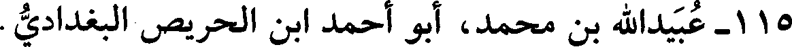
115 - عبيدالله بن محمد، أبو أحمد ابن الحريص البغدادي.
File: 000769.gt.txt (if the image is defective, simply delete all Arabic text and the line will be excluded)

عن ابن صاعد، وإبراهيم بن عبدالصمد الهاشمي. حدث بدمشق،
File: 000770.gt.txt (if the image is defective, simply delete all Arabic text and the line will be excluded)

228
File: 000771.gt.txt (if the image is defective, simply delete all Arabic text and the line will be excluded)

سنة ثنتين وستين وثلاث مئة
File: 000772.gt.txt (if the image is defective, simply delete all Arabic text and the line will be excluded)

25 - أحمد بن إبراهيم بن بكر القفطي.
File: 000773.gt.txt (if the image is defective, simply delete all Arabic text and the line will be excluded)

روى عن النسائي بمصر.
File: 000774.gt.txt (if the image is defective, simply delete all Arabic text and the line will be excluded)
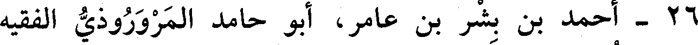
26 - أحمد بن بشر بن عامر، أبو حامد المروروذي الفقيه
File: 000775.gt.txt (if the image is defective, simply delete all Arabic text and the line will be excluded)

الشافعي، نزيل البصرة.
File: 000776.gt.txt (if the image is defective, simply delete all Arabic text and the line will be excluded)

تفقه على أبي إسحاق المروزي، وصنف «الجامع» في المذهب،
File: 000777.gt.txt (if the image is defective, simply delete all Arabic text and the line will be excluded)

وشرح «مختصر المزني» وصنف في الأصول. وكان إماما لا يشق غباره.
File: 000778.gt.txt (if the image is defective, simply delete all Arabic text and the line will be excluded)

وعنه أخذ فقهاء البصرة.
File: 000779.gt.txt (if the image is defective, simply delete all Arabic text and the line will be excluded)

27 - أحمد بن عثمان، أبو سعيد البغدادي الفقيه، ويعرف بابن
File: 000780.gt.txt (if the image is defective, simply delete all Arabic text and the line will be excluded)

البقال.
File: 000781.gt.txt (if the image is defective, simply delete all Arabic text and the line will be excluded)

حدث بدمشق عن أبي القاسم البغوي، وأبي بكر بن أبي داود. وعنه
File: 000782.gt.txt (if the image is defective, simply delete all Arabic text and the line will be excluded)

ابن جميع (1) ، وأبو نصر بن الجبان.
File: 000783.gt.txt (if the image is defective, simply delete all Arabic text and the line will be excluded)

حدث في هذه السنة وانقطع خبره(2) .
File: 000784.gt.txt (if the image is defective, simply delete all Arabic text and the line will be excluded)

28 - أحمد بن محمد بن زكريا الأموي، مولاهم، الأندلسي
File: 000785.gt.txt (if the image is defective, simply delete all Arabic text and the line will be excluded)

الرصافي المالكي، مفتي ناحيته ومحدثها.
File: 000786.gt.txt (if the image is defective, simply delete all Arabic text and the line will be excluded)

روي عن أحمد بن خالد وغيره، وتوفي في صفر(3) .
File: 000787.gt.txt (if the image is defective, simply delete all Arabic text and the line will be excluded)

29 - أحمد بن محمد بن همام، أبو عمرو النيسابوري، العبد
File: 000788.gt.txt (if the image is defective, simply delete all Arabic text and the line will be excluded)

الصالح.
File: 000789.gt.txt (if the image is defective, simply delete all Arabic text and the line will be excluded)
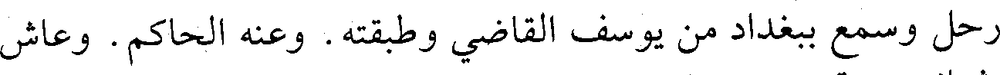
رحل وسمع ببغداد من يوسف القاضي وطبقته. وعنه الحاكم. وعاش
File: 000790.gt.txt (if the image is defective, simply delete all Arabic text and the line will be excluded)

بضعا وثمانين سنة.
File: 000791.gt.txt (if the image is defective, simply delete all Arabic text and the line will be excluded)

30 - أحمد بن محمد بن أحمد بن عقبة بن مضرس، أبو الحسن
File: 000792.gt.txt (if the image is defective, simply delete all Arabic text and the line will be excluded)

قاضي أرجان.
File: 000793.gt.txt (if the image is defective, simply delete all Arabic text and the line will be excluded)

في السجن حتى هلك، ولله الحمد.
File: 000794.gt.txt (if the image is defective, simply delete all Arabic text and the line will be excluded)

وفيها وزر ببغداد أبو طاهر بن بقية، ولقب بالناصح، وكان سمحا
File: 000795.gt.txt (if the image is defective, simply delete all Arabic text and the line will be excluded)

كريما، له راتب كل يوم من الثلج ألف رطل، وراتبه من الشمع في الشهر
File: 000796.gt.txt (if the image is defective, simply delete all Arabic text and the line will be excluded)

ألف من.
File: 000797.gt.txt (if the image is defective, simply delete all Arabic text and the line will be excluded)

وكان عز الدولة قد استوزر ذاك المدبر أبا الفضل الشيرازي، واسمه
File: 000798.gt.txt (if the image is defective, simply delete all Arabic text and the line will be excluded)

العباس بن الحسن صهر الوزير المهلبي، ثم عزله بعد عامين من وزارته بأبي
File: 000799.gt.txt (if the image is defective, simply delete all Arabic text and the line will be excluded)

الفرج محمد بن العباس بن فسانجس، ثم عزل أبا الفرج بعد سنة، وأعاد
File: 000800.gt.txt (if the image is defective, simply delete all Arabic text and the line will be excluded)
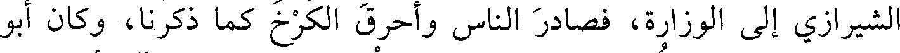
الشيرازي إلى الوزارة، فصادر الناس وأحرق الكرخ كما ذكرنا، وكان أبو
File: 000801.gt.txt (if the image is defective, simply delete all Arabic text and the line will be excluded)

طاهر من صغار الكتاب، يكتب على المطبخ لعز الدولة، فآل أمره إلى
File: 000802.gt.txt (if the image is defective, simply delete all Arabic text and the line will be excluded)

الوزارة، فقال الناس: من الغضارة إلى الوزارة. وكان كريما جوادا، فغطى
File: 000803.gt.txt (if the image is defective, simply delete all Arabic text and the line will be excluded)

كرمه عيوبه، فوزر لعز الدولة أربعة أعوام، ثم قتله عضد الدولة وصلبه.
File: 000804.gt.txt (if the image is defective, simply delete all Arabic text and the line will be excluded)

سنة ثلاث وستين وثلاث مئة
File: 000805.gt.txt (if the image is defective, simply delete all Arabic text and the line will be excluded)

فيها تقلد قضاء القضاة أبو الحسن محمد ابن أم شيبان الهاشمي،
File: 000806.gt.txt (if the image is defective, simply delete all Arabic text and the line will be excluded)
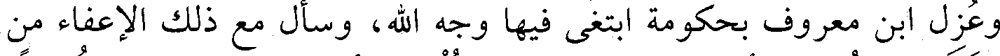
وعزل ابن معروف بحكومة ابتغى فيها وجه الله، وسأل مع ذلك الإعفاء من
File: 000807.gt.txt (if the image is defective, simply delete all Arabic text and the line will be excluded)

القضاء، فخوطب أبو الحسن، فامتنع، فألزم، فأجاب وشرط لنفسه شروطا
File: 000808.gt.txt (if the image is defective, simply delete all Arabic text and the line will be excluded)

منها أنه لا يرتزق على القضاء ولا يخلع عليه ولا يسام ما لا يوجبه حكم،
File: 000809.gt.txt (if the image is defective, simply delete all Arabic text and the line will be excluded)

ولا يشفع إليه في إيقاف حق أو فعل ما لا يقتضيه شرع. وقرر لكاتبه في كل
File: 000810.gt.txt (if the image is defective, simply delete all Arabic text and the line will be excluded)

شهر ثلاث مئة درهم، ولحاجبه مئة وخمسون درهما، وللعارض على بابه
File: 000811.gt.txt (if the image is defective, simply delete all Arabic text and the line will be excluded)

مئة درهم، ولخازن ديوان الحكم والأعوان ست مئة درهم. وركب إلى
File: 000812.gt.txt (if the image is defective, simply delete all Arabic text and the line will be excluded)
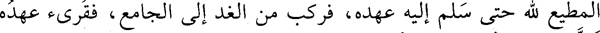
المطيع لله حتى سلم إليه عهده، فركب من الغد إلى الجامع، فقرىء عهده
File: 000813.gt.txt (if the image is defective, simply delete all Arabic text and the line will be excluded)

تولى إنشاءه أبو منصور أحمد بن عبيدالله الشيرازي صاحب ديوان الرسائل
File: 000814.gt.txt (if the image is defective, simply delete all Arabic text and the line will be excluded)

وهو: « هذا ما عهد عبدالله الفضل المطيع لله أمير المؤمنين إلى محمد بن
File: 000815.gt.txt (if the image is defective, simply delete all Arabic text and the line will be excluded)

صالح الهاشمي حين دعاه إلى ما يتولاه من القضاء بين أهل مدينة السلام
File: 000816.gt.txt (if the image is defective, simply delete all Arabic text and the line will be excluded)

قال الميداني : توفي في شهر رمضان.
File: 000817.gt.txt (if the image is defective, simply delete all Arabic text and the line will be excluded)

وقال أبو محمد الكتاني(1) : كان ثقة نبيلا حافظا، كتب القناطير،
File: 000818.gt.txt (if the image is defective, simply delete all Arabic text and the line will be excluded)

وحدث باليسير، وقد سمع أيضا بمصر. مات عن بضع وستين سنة(2) .
File: 000819.gt.txt (if the image is defective, simply delete all Arabic text and the line will be excluded)

90 - مروان بن عبدالملك القرطبي الزاهد.
File: 000820.gt.txt (if the image is defective, simply delete all Arabic text and the line will be excluded)
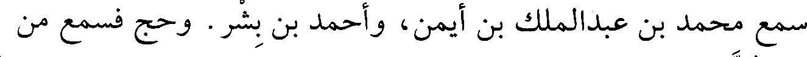
سمع محمد بن عبدالملك بن أيمن، وأحمد بن بشر. وحج فسمع من
File: 000821.gt.txt (if the image is defective, simply delete all Arabic text and the line will be excluded)

محمد بن الصموت بمصر.
File: 000822.gt.txt (if the image is defective, simply delete all Arabic text and the line will be excluded)

وكان زاهدا عابدا خيرا، توفي في ربيع الآخر(3) .
File: 000823.gt.txt (if the image is defective, simply delete all Arabic text and the line will be excluded)
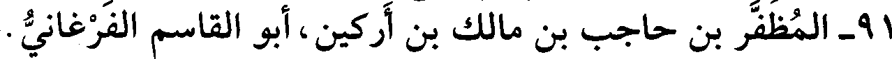
91 - المظفر بن حاجب بن مالك بن أركين، أبو القاسم الفرغاني.
File: 000824.gt.txt (if the image is defective, simply delete all Arabic text and the line will be excluded)
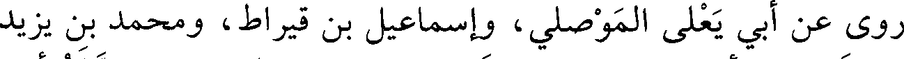
روى عن أبي يعلى الموصلي، وإسماعيل بن قيراط، ومحمد بن يزيد
File: 000825.gt.txt (if the image is defective, simply delete all Arabic text and the line will be excluded)

ابن عبدالصمد، وأبي عبدالرحمن النسائي، وجعفر الفريابي. رحله أبوه
File: 000826.gt.txt (if the image is defective, simply delete all Arabic text and the line will be excluded)

واعتنى به. روى عنه تمام الرازي، وأبو نصر بن هارون، وأبو نصر ابن
File: 000827.gt.txt (if the image is defective, simply delete all Arabic text and the line will be excluded)

الجندي، وآخرون.
File: 000828.gt.txt (if the image is defective, simply delete all Arabic text and the line will be excluded)

حدث في هذا العام(4) .
File: 000829.gt.txt (if the image is defective, simply delete all Arabic text and the line will be excluded)

قرأت على عمر بن غدير : أخبركم عبدالصمد بن محمد الأنصاري
File: 000830.gt.txt (if the image is defective, simply delete all Arabic text and the line will be excluded)

حضورا أن أبا الحسن علي بن المسلم أخبرهم في سنة ست وعشرين
File: 000831.gt.txt (if the image is defective, simply delete all Arabic text and the line will be excluded)

وخمس مئة، قال: أخبرنا الحسن بن أحمد بن عبدالواحد، قال: أخبرنا أبو
File: 000832.gt.txt (if the image is defective, simply delete all Arabic text and the line will be excluded)

الحسن علي بن موسى السمسار، قال : أخبرنا المظفر بن حاجب، قال:
File: 000833.gt.txt (if the image is defective, simply delete all Arabic text and the line will be excluded)

أخبرنا محمد بن يزيد، قال : أخبرنا موسى بن أيوب النصيبي، قال : حدثنا
File: 000834.gt.txt (if the image is defective, simply delete all Arabic text and the line will be excluded)

سفيان بن عيينة، عن عبيدالله بن أبي يزيد، سمع ابن عباس يقول : كان
File: 000835.gt.txt (if the image is defective, simply delete all Arabic text and the line will be excluded)
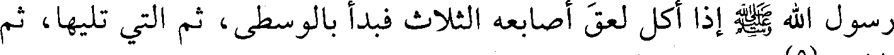
رسول الله صعلم إذا أكل لعق أصابعه الثلاث فبدأ بالوسطى، ثم التي تليها، ثم
File: 000836.gt.txt (if the image is defective, simply delete all Arabic text and the line will be excluded)

الإبهام(5).
File: 000837.gt.txt (if the image is defective, simply delete all Arabic text and the line will be excluded)

أحمد بن سنان، وعبدالله بن محمد بن العباس. وعنه أبو بكر بن أبي علي
File: 000838.gt.txt (if the image is defective, simply delete all Arabic text and the line will be excluded)

قرابته، وأبو نعيم(1) .
File: 000839.gt.txt (if the image is defective, simply delete all Arabic text and the line will be excluded)
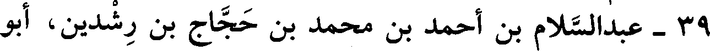
39 - عبدالسلام بن أحمد بن محمد بن حجاج بن رشدين، أبو
File: 000840.gt.txt (if the image is defective, simply delete all Arabic text and the line will be excluded)

جعفر المصري.
File: 000841.gt.txt (if the image is defective, simply delete all Arabic text and the line will be excluded)

يروي عن أبيه وعمومته.
File: 000842.gt.txt (if the image is defective, simply delete all Arabic text and the line will be excluded)

40 - عبدالملك بن الحسن بن يوسف المعدل البغدادي، أبو
File: 000843.gt.txt (if the image is defective, simply delete all Arabic text and the line will be excluded)

عمرو ابن السقطي.
File: 000844.gt.txt (if the image is defective, simply delete all Arabic text and the line will be excluded)

سمع أبا مسلم الكجي، ويوسف القاضي، وأحمد بن يحيى
File: 000845.gt.txt (if the image is defective, simply delete all Arabic text and the line will be excluded)

الحلواني، وأبا بكر الفريابي. وعنه محمد بن أسد الكاتب، وأبو علي بن
File: 000846.gt.txt (if the image is defective, simply delete all Arabic text and the line will be excluded)

شاذان، وأبو نعيم. وانتخب عليه الدارقطني.
File: 000847.gt.txt (if the image is defective, simply delete all Arabic text and the line will be excluded)

وشهد سنة إحدى عشرة وثلاث مئة عند قاضي بغداد أبي عمرو محمد
File: 000848.gt.txt (if the image is defective, simply delete all Arabic text and the line will be excluded)

ابن يوسف، وعاش خمسا وثمانين سنة(2) .
File: 000849.gt.txt (if the image is defective, simply delete all Arabic text and the line will be excluded)
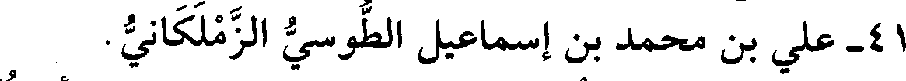
41 - علي بن محمد بن إسماعيل الطوسي الزملكاني.
File: 000850.gt.txt (if the image is defective, simply delete all Arabic text and the line will be excluded)

سمع الباغندي، وابن خزيمة، وجماهير. وعنه الحاكم، وأبو نعيم.
File: 000851.gt.txt (if the image is defective, simply delete all Arabic text and the line will be excluded)

توفي بمكة.
File: 000852.gt.txt (if the image is defective, simply delete all Arabic text and the line will be excluded)

42 - عمر بن أحمد بن عمر، القاضي أبوعبد الله القصباني، عرف
File: 000853.gt.txt (if the image is defective, simply delete all Arabic text and the line will be excluded)

بابن شق.
File: 000854.gt.txt (if the image is defective, simply delete all Arabic text and the line will be excluded)

روى عن علي بن العباس المقانعي، وابن المنذر الفقيه، وعلي بن
File: 000855.gt.txt (if the image is defective, simply delete all Arabic text and the line will be excluded)

سراج المصري. وعنه الدارقطني، وأبو نعيم، والبرقاني وقال: لا بأس به.
File: 000856.gt.txt (if the image is defective, simply delete all Arabic text and the line will be excluded)

قلت : حدث في هذا العام(3) .
File: 000857.gt.txt (if the image is defective, simply delete all Arabic text and the line will be excluded)

43 - عمرو بن أحمد بن محمد بن الحسن، أبو أحمد الإستراباذي
File: 000858.gt.txt (if the image is defective, simply delete all Arabic text and the line will be excluded)

الفقيه.
File: 000859.gt.txt (if the image is defective, simply delete all Arabic text and the line will be excluded)

سمع أباه، وهميم بن همام، وعمران بن موسى بن مجاشع، وأبا
File: 000860.gt.txt (if the image is defective, simply delete all Arabic text and the line will be excluded)

وقيل : إنه لما أدخل مصر، قال له بعض الأشراف ممن يعانده:
File: 000861.gt.txt (if the image is defective, simply delete all Arabic text and the line will be excluded)

الحمد لله على سلامتك! فقال : الحمد لله على سلامة ديني وسلامة دنياك.
File: 000862.gt.txt (if the image is defective, simply delete all Arabic text and the line will be excluded)

قلت : كانت محنة هؤلاء عظيمة على المسلمين، ولما استولوا على
File: 000863.gt.txt (if the image is defective, simply delete all Arabic text and the line will be excluded)

الشام هرب الصلحاء والفقراء من بيت المقدس، وأقام الزاهد أبو الفرج
File: 000864.gt.txt (if the image is defective, simply delete all Arabic text and the line will be excluded)

الطرسوسي بالأقصى، فخوفوه منهم، فثبت، فدخلت المغاربة وعبثوا به،
File: 000865.gt.txt (if the image is defective, simply delete all Arabic text and the line will be excluded)

وقالوا : العن كيت وكيت، وسموا الصحابة، وهو يقول : لا إله إلا الله،
File: 000866.gt.txt (if the image is defective, simply delete all Arabic text and the line will be excluded)

سائر نهاره، وكفاه الله شرهم.
File: 000867.gt.txt (if the image is defective, simply delete all Arabic text and the line will be excluded)

وذكر ابن السعساع المصري أنه رآه في النوم بعد ما قتل، وهو في
File: 000868.gt.txt (if the image is defective, simply delete all Arabic text and the line will be excluded)

أحسن هيئة. قال : فقلت : ما فعل الله بك؟ فقال :
File: 000869.gt.txt (if the image is defective, simply delete all Arabic text and the line will be excluded)

حبـانـي مـالكـي بـدوام عـز وواعـدنـي بقـرب الانتصـار
File: 000870.gt.txt (if the image is defective, simply delete all Arabic text and the line will be excluded)

وقـربنـي وأدنـانــي إليــه وقال : انعم بعيش في جواري(1)
File: 000871.gt.txt (if the image is defective, simply delete all Arabic text and the line will be excluded)

82 - محمد بن أحمد بن عيسى، أبو بكر القمي.
File: 000872.gt.txt (if the image is defective, simply delete all Arabic text and the line will be excluded)

سمع أبا عروبة الحراني، ومحمد بن قتيبة العسقلاني. سمع منه في
File: 000873.gt.txt (if the image is defective, simply delete all Arabic text and the line will be excluded)

هذا العام السكن بن جميع بصيدا(2) .
File: 000874.gt.txt (if the image is defective, simply delete all Arabic text and the line will be excluded)

83 - محمد بن إسحاق بن مطرف، أبو عبدالله الأندلسي
File: 000875.gt.txt (if the image is defective, simply delete all Arabic text and the line will be excluded)

الإستجي.
File: 000876.gt.txt (if the image is defective, simply delete all Arabic text and the line will be excluded)

سمع من عبيدالله بن يحيى، ومحمد بن عمر بن لبابة، وأحمد بن
File: 000877.gt.txt (if the image is defective, simply delete all Arabic text and the line will be excluded)

وكان شاعرا عالما باللغة والعربية؛ روى عنه إسماعيل، وغيره.
File: 000878.gt.txt (if the image is defective, simply delete all Arabic text and the line will be excluded)

مات في شوال(3) .
File: 000879.gt.txt (if the image is defective, simply delete all Arabic text and the line will be excluded)

84 - محمد بن الحسين بن إبراهيم بن عاصم، أبو الحسن
File: 000880.gt.txt (if the image is defective, simply delete all Arabic text and the line will be excluded)

الآبري ثم السجستاني.
File: 000881.gt.txt (if the image is defective, simply delete all Arabic text and the line will be excluded)

رحل وطوف، وسمع أبا العباس السراج، وابن خزيمة، ومحمد بن
File: 000882.gt.txt (if the image is defective, simply delete all Arabic text and the line will be excluded)

الربيع الجيزي، وأبا عروبة الحراني، ومحمد بن يوسف الهروي، وزكريا
File: 000883.gt.txt (if the image is defective, simply delete all Arabic text and the line will be excluded)
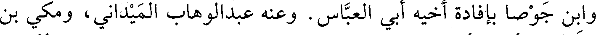
وابن جوصا بإفادة أخيه أبي العباس. وعنه عبد الوهاب الميداني، ومكي بن
File: 000884.gt.txt (if the image is defective, simply delete all Arabic text and the line will be excluded)

الغمر، وأخوه أبو الحسن علي ابن السمسار، ومحمد بن عوف المزني،
File: 000885.gt.txt (if the image is defective, simply delete all Arabic text and the line will be excluded)

وغيرهم(1).
File: 000886.gt.txt (if the image is defective, simply delete all Arabic text and the line will be excluded)

146 - أحمد بن نصر بن دينار الأصبهاني.
File: 000887.gt.txt (if the image is defective, simply delete all Arabic text and the line will be excluded)

عن أبي بكر بن أبي داود، وابن صاعد. وعنه أبو بكر بن أبي علي،
File: 000888.gt.txt (if the image is defective, simply delete all Arabic text and the line will be excluded)

وأبو نعيم(2).
File: 000889.gt.txt (if the image is defective, simply delete all Arabic text and the line will be excluded)

ورخه عبدالرحمن بن مندة.
File: 000890.gt.txt (if the image is defective, simply delete all Arabic text and the line will be excluded)

147 - أحمد بن نصر بن عبدالله بن الفتح، أبو بكر البغدادي
File: 000891.gt.txt (if the image is defective, simply delete all Arabic text and the line will be excluded)
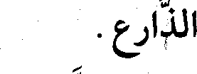
الذارع.
File: 000892.gt.txt (if the image is defective, simply delete all Arabic text and the line will be excluded)

قال الخطيب(3) : في حديثه نكرة تدل على أنه ليس بثقة.
File: 000893.gt.txt (if the image is defective, simply delete all Arabic text and the line will be excluded)

وسمع منه ابن دوما في هذه السنة، ولم يؤرخ أحد موته فيما أعلم،
File: 000894.gt.txt (if the image is defective, simply delete all Arabic text and the line will be excluded)

وهو متهم، يأتي بالطامات، فليحذر منه.
File: 000895.gt.txt (if the image is defective, simply delete all Arabic text and the line will be excluded)

148 - إبراهيم بن عبدالله بن عبيد البغدادي الثلاج.
File: 000896.gt.txt (if the image is defective, simply delete all Arabic text and the line will be excluded)

عن محمد بن محمد بن سليمان الباغندي. وعنه أبو نصر ابن
File: 000897.gt.txt (if the image is defective, simply delete all Arabic text and the line will be excluded)

الجبان، وابن أخيه أبو القاسم عبدالله ابن الثلاج.
File: 000898.gt.txt (if the image is defective, simply delete all Arabic text and the line will be excluded)

149 - إسماعيل بن نجيد بن أحمد بن يوسف بن خالد، أبو عمرو
File: 000899.gt.txt (if the image is defective, simply delete all Arabic text and the line will be excluded)

السلمي النيسابوري الصوفي الزاهد، شيخ عصره في التصوف
File: 000900.gt.txt (if the image is defective, simply delete all Arabic text and the line will be excluded)

والمعاملة، ومسند مصره.
File: 000901.gt.txt (if the image is defective, simply delete all Arabic text and the line will be excluded)

قال الحاكم : ورث من آبائه أموالا كثيرة، فأنفق سائرها على الزهاد
File: 000902.gt.txt (if the image is defective, simply delete all Arabic text and the line will be excluded)

والعلماء. وصحب أبا عثمان الحيري، والجنيد. وسمع إبراهيم بن أبي
File: 000903.gt.txt (if the image is defective, simply delete all Arabic text and the line will be excluded)

طالب، ومحمد بن إبراهيم البوشنجي، وأبا مسلم الكجي، وعبدالله بن
File: 000904.gt.txt (if the image is defective, simply delete all Arabic text and the line will be excluded)

أحمد، ومحمد بن أيوب الرازي، وعلي بن الحسين بن الجنيد، وجماعة.
File: 000905.gt.txt (if the image is defective, simply delete all Arabic text and the line will be excluded)

237
File: 000906.gt.txt (if the image is defective, simply delete all Arabic text and the line will be excluded)

مجاشع، ومحمد بن إسحاق بن خزيمة، وأبي يعلى الموصلي، والهيثم بن
File: 000907.gt.txt (if the image is defective, simply delete all Arabic text and the line will be excluded)
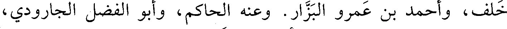
خلف، وأحمد بن عمرو البزار. وعنه الحاكم، وأبو الفضل الجارودي،
File: 000908.gt.txt (if the image is defective, simply delete all Arabic text and the line will be excluded)

وجماعة. وقد انتقى عليه رفيقه أبو علي النيسابوري الحافظ.
File: 000909.gt.txt (if the image is defective, simply delete all Arabic text and the line will be excluded)

وهو جرجاني نزل نيسابور(1).
File: 000910.gt.txt (if the image is defective, simply delete all Arabic text and the line will be excluded)
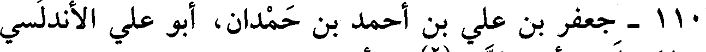
110 - جعفر بن علي بن أحمد بن حمدان، أبو علي الأندلسي
File: 000911.gt.txt (if the image is defective, simply delete all Arabic text and the line will be excluded)

صاحب المسيلة، وأمير الزاب(2) من أعمال إفريقية.
File: 000912.gt.txt (if the image is defective, simply delete all Arabic text and the line will be excluded)

كان شيخا كثير العطاء، مؤثرا للعلماء، ولابن هانئ الأندلسي فيه
File: 000913.gt.txt (if the image is defective, simply delete all Arabic text and the line will be excluded)
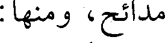
مدائح، ومنها :
File: 000914.gt.txt (if the image is defective, simply delete all Arabic text and the line will be excluded)

المـدنفـان مـن البـريـة كلهـا جسمـي وطـرف بـابلـي أحـور
File: 000915.gt.txt (if the image is defective, simply delete all Arabic text and the line will be excluded)

والمشـرقـات النيـرات ثـلاثـة الشمـس والقمـر المنيـر وجعفـر
File: 000916.gt.txt (if the image is defective, simply delete all Arabic text and the line will be excluded)

والمسيلة: مدينة من أعمال الزاب.
File: 000917.gt.txt (if the image is defective, simply delete all Arabic text and the line will be excluded)

وكان بين جعفر وبين زيري بن مناد عداوة وحروب، جرت بينهما
File: 000918.gt.txt (if the image is defective, simply delete all Arabic text and the line will be excluded)

معركة هائلة قتل فيها زيري، ثم قام بعده ابنه بلكين، واستظهر على جعفر،
File: 000919.gt.txt (if the image is defective, simply delete all Arabic text and the line will be excluded)

فهرب منه إلى الأندلس، فقتل في هذه السنة.
File: 000920.gt.txt (if the image is defective, simply delete all Arabic text and the line will be excluded)

وأبوه علي هو الذي بنى المسيلة. وزيري : هو جد المعز بن
File: 000921.gt.txt (if the image is defective, simply delete all Arabic text and the line will be excluded)

باديس(3).
File: 000922.gt.txt (if the image is defective, simply delete all Arabic text and the line will be excluded)

111 - الحسن بن سعيد القرشي الدمشقي.
File: 000923.gt.txt (if the image is defective, simply delete all Arabic text and the line will be excluded)

سمع أصحاب هشام بن عمار(4).
File: 000924.gt.txt (if the image is defective, simply delete all Arabic text and the line will be excluded)

112 - الحسن بن علي بن أبي السلاسل، أبو القاسم البجلي.
File: 000925.gt.txt (if the image is defective, simply delete all Arabic text and the line will be excluded)

حدث عن أحمد بن علي القاضي المروزي. وعنه تمام، وأبو نصر
File: 000926.gt.txt (if the image is defective, simply delete all Arabic text and the line will be excluded)

المري، ومحمد بن عوف المزني، توفي في رجب.
File: 000927.gt.txt (if the image is defective, simply delete all Arabic text and the line will be excluded)

113 - سبكتكين الأمير، حاجب معز الدولة بن بويه.
File: 000928.gt.txt (if the image is defective, simply delete all Arabic text and the line will be excluded)
227
File: 000929.gt.txt (if the image is defective, simply delete all Arabic text and the line will be excluded)

حدث عن محمد بن جرير، ومحمد بن محمد الباغندي، وجماعة.
File: 000930.gt.txt (if the image is defective, simply delete all Arabic text and the line will be excluded)

قال الخطيب (1): حدثنا عنه ابن بكير، قال: قال ابن أبي الفوارس:
File: 000931.gt.txt (if the image is defective, simply delete all Arabic text and the line will be excluded)

فيه تساهل.
File: 000932.gt.txt (if the image is defective, simply delete all Arabic text and the line will be excluded)

14 - فردوس بن أحمد بن محمد بن سعيد بن فردوس البزاز، أبو
File: 000933.gt.txt (if the image is defective, simply delete all Arabic text and the line will be excluded)

15 - محمد بن أحمد بن علي بن شاهويه، القاضي أبو بكر
File: 000934.gt.txt (if the image is defective, simply delete all Arabic text and the line will be excluded)

بكر.
File: 000935.gt.txt (if the image is defective, simply delete all Arabic text and the line will be excluded)

الفارسي الحنفي، أحد الأعلام.
File: 000936.gt.txt (if the image is defective, simply delete all Arabic text and the line will be excluded)

سمع أبا خليفة، وزكريا الساجي، ودرس بنيسابور، ثم درس ببخاري
File: 000937.gt.txt (if the image is defective, simply delete all Arabic text and the line will be excluded)

بمدرسة أبي حفص صاحب محمد بن الحسن مدة.
File: 000938.gt.txt (if the image is defective, simply delete all Arabic text and the line will be excluded)

ومات بنيسابور في ذي القعدة سنة إحدى وستين وثلاث مئة(2) .
File: 000939.gt.txt (if the image is defective, simply delete all Arabic text and the line will be excluded)

16 - محمد بن أحمد بن موسى بن يزداد، القاضي أبو عبدالله
File: 000940.gt.txt (if the image is defective, simply delete all Arabic text and the line will be excluded)

القمي.
File: 000941.gt.txt (if the image is defective, simply delete all Arabic text and the line will be excluded)

توفي بفرغانة في صفر، وحمل تابوته إلى سمرقند. سمع محمد بن
File: 000942.gt.txt (if the image is defective, simply delete all Arabic text and the line will be excluded)

أيوب الرازي، وإبراهيم بن يوسف الهسنجاني. وولي قضاء سمرقند. وكان
File: 000943.gt.txt (if the image is defective, simply delete all Arabic text and the line will be excluded)

من كبار الحنفية، ثقة في الحديث. روى عنه أبو سعد الإدريسي وغيره.
File: 000944.gt.txt (if the image is defective, simply delete all Arabic text and the line will be excluded)

17 - محمد بن حارث بن أسد، أبو عبدالله الخشني القيرواني
File: 000945.gt.txt (if the image is defective, simply delete all Arabic text and the line will be excluded)

الحافظ.
File: 000946.gt.txt (if the image is defective, simply delete all Arabic text and the line will be excluded)

أخذ عن أحمد بن نصر، وأحمد بن زياد. ودخل الأندلس فسمع
File: 000947.gt.txt (if the image is defective, simply delete all Arabic text and the line will be excluded)

قاسم بن أصبغ، وأحمد بن عبادة، وسكن قرطبة وتمكن من صاحبها الحكم
File: 000948.gt.txt (if the image is defective, simply delete all Arabic text and the line will be excluded)

ابن الناصر لدين الله، وصنف له كتبا منها كتاب «الاتفاق والاختلاف
File: 000949.gt.txt (if the image is defective, simply delete all Arabic text and the line will be excluded)

196
File: 000950.gt.txt (if the image is defective, simply delete all Arabic text and the line will be excluded)

سمع أبا مسلم الكجي، ومحمد بن يحيى المروزي، ويوسف بن
File: 000951.gt.txt (if the image is defective, simply delete all Arabic text and the line will be excluded)

يعقوب القاضي. وعنه ابن أبي الفوارس، والحسين بن شيطا، وأبو علي بن
File: 000952.gt.txt (if the image is defective, simply delete all Arabic text and the line will be excluded)

دوما.
File: 000953.gt.txt (if the image is defective, simply delete all Arabic text and the line will be excluded)

قال الخطيب(1): كان ثقة صدوقا.
File: 000954.gt.txt (if the image is defective, simply delete all Arabic text and the line will be excluded)

124 - عمر بن محمد بن عبدالله، أبو القاسم ابن الترمذي البزاز.
File: 000955.gt.txt (if the image is defective, simply delete all Arabic text and the line will be excluded)

بغدادي فيه ضعف، روى عن جده لأمه محمد بن عبيدالله بن مرزوق
File: 000956.gt.txt (if the image is defective, simply delete all Arabic text and the line will be excluded)

الخلال صاحب عفان ، ويوسف بن يعقوب القاضي. وعنه محمد بن عمر
File: 000957.gt.txt (if the image is defective, simply delete all Arabic text and the line will be excluded)

بن بكير، وبشرى الفاتني، ومحمد بن درهم، وأبو نعيم.
File: 000958.gt.txt (if the image is defective, simply delete all Arabic text and the line will be excluded)

قال ابن أبي الفوارس : فيه نظر(2).
File: 000959.gt.txt (if the image is defective, simply delete all Arabic text and the line will be excluded)

125 - الفضل، أبو القاسم أمير المؤمنين المطيع لله ابن المقتدر
File: 000960.gt.txt (if the image is defective, simply delete all Arabic text and the line will be excluded)

جعفر ابن المعتضد العباسي الهاشمي.
File: 000961.gt.txt (if the image is defective, simply delete all Arabic text and the line will be excluded)

ولي الخلافة بعد المستكفي، وأمه أم ولد اسمها مشغلة، أدركت
File: 000962.gt.txt (if the image is defective, simply delete all Arabic text and the line will be excluded)

خلافته. بويع في سنة أربع وثلاثين، ومولده في أول سنة إحدى وثلاث
File: 000963.gt.txt (if the image is defective, simply delete all Arabic text and the line will be excluded)

مئة.
File: 000964.gt.txt (if the image is defective, simply delete all Arabic text and the line will be excluded)

قال ابن شاهين : وخلع نفسه غير مكره فيما صح عندي في ذي القعدة
File: 000965.gt.txt (if the image is defective, simply delete all Arabic text and the line will be excluded)

سنة ثلاث وستين، ونزل عن الأمر لولده أبي بكر عبدالكريم، ولقبوه
File: 000966.gt.txt (if the image is defective, simply delete all Arabic text and the line will be excluded)

«الطائع لله» وسن أبي بكر يومئذ ثمان وأربعون سنة. ثم إن الطائع خرج إلى
File: 000967.gt.txt (if the image is defective, simply delete all Arabic text and the line will be excluded)

واسط ومعه أبوه فمات في المحرم سنة أربع وستين.
File: 000968.gt.txt (if the image is defective, simply delete all Arabic text and the line will be excluded)
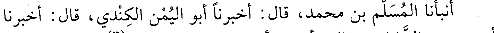
أنبأنا المسلم بن محمد، قال: أخبرنا أبو اليمن الكندي، قال: أخبرنا
File: 000969.gt.txt (if the image is defective, simply delete all Arabic text and the line will be excluded)

أبو منصور الشيباني، قال: أخبرنا أبو بكر الخطيب، قال(3): حدثني محمد
File: 000970.gt.txt (if the image is defective, simply delete all Arabic text and the line will be excluded)

بن يوسف القطان، قال: سمعت أبا الفضل التميمي، قال: سمعت المطيع
File: 000971.gt.txt (if the image is defective, simply delete all Arabic text and the line will be excluded)

لله، قال : سمعت شيخي ابن منيع، قال : سمعت أحمد بن حنبل يقول : إذا
File: 000972.gt.txt (if the image is defective, simply delete all Arabic text and the line will be excluded)
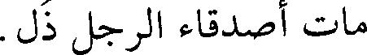
مات أصدقاء الرجل ذل.
File: 000973.gt.txt (if the image is defective, simply delete all Arabic text and the line will be excluded)

231
File: 000974.gt.txt (if the image is defective, simply delete all Arabic text and the line will be excluded)

وجعله من أكبر قواده، ثم سمه بعد ابن كلس الوزير، فحزن عليه العزيز،
File: 000975.gt.txt (if the image is defective, simply delete all Arabic text and the line will be excluded)

فدارى ابن كلس عن نفسه بخمس مئة ألف دينار.
File: 000976.gt.txt (if the image is defective, simply delete all Arabic text and the line will be excluded)

سنة ثمان وستين وثلاث مئة
File: 000977.gt.txt (if the image is defective, simply delete all Arabic text and the line will be excluded)

فيها أمر الطائع لله بأن يضرب على باب عضد الدولة الدبادب في
File: 000978.gt.txt (if the image is defective, simply delete all Arabic text and the line will be excluded)

وقت الصبح والمغرب والعشاء، وأن يخطب له على منابر الحضرة.
File: 000979.gt.txt (if the image is defective, simply delete all Arabic text and the line will be excluded)
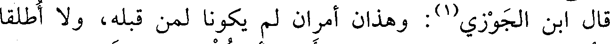
قال ابن الجوزي(1): وهذان أمران لم يكونا لمن قبله، ولا أطلقا
File: 000980.gt.txt (if the image is defective, simply delete all Arabic text and the line will be excluded)

لولاة العهود، وقد كان معز الدولة، أحب أن تضرب له الدبادب بمدينة
File: 000981.gt.txt (if the image is defective, simply delete all Arabic text and the line will be excluded)
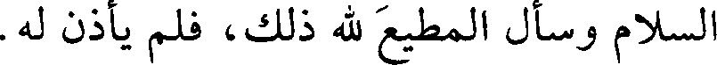
السلام وسأل المطيع لله ذلك، فلم يأذن له.
File: 000982.gt.txt (if the image is defective, simply delete all Arabic text and the line will be excluded)

قلت: وما ذاك إلا لضعف أمر الخلافة.
File: 000983.gt.txt (if the image is defective, simply delete all Arabic text and the line will be excluded)

وفيها توثب على دمشق قسام كما هو مذكور في ترجمته في سنة ست
File: 000984.gt.txt (if the image is defective, simply delete all Arabic text and the line will be excluded)

سنة تسع وستين وثلاث مئة
File: 000985.gt.txt (if the image is defective, simply delete all Arabic text and the line will be excluded)

وسبعين.
File: 000986.gt.txt (if the image is defective, simply delete all Arabic text and the line will be excluded)

في صفر قبض عضد الدولة على قاضي القضاة أبي محمد بن
File: 000987.gt.txt (if the image is defective, simply delete all Arabic text and the line will be excluded)

معروف، فأنفذه إلى القلعة بفارس، وقلد أبا سعد بشر بن الحسين القضاء.
File: 000988.gt.txt (if the image is defective, simply delete all Arabic text and the line will be excluded)

وفي شعبان ورد رسول العزيز صاحب مصر إلى عضد الدولة بكتاب،
File: 000989.gt.txt (if the image is defective, simply delete all Arabic text and the line will be excluded)

وما زال يبعث إليه رسالة بعد رسالة، فأجابه بما مضمونه صدق الطوية
File: 000990.gt.txt (if the image is defective, simply delete all Arabic text and the line will be excluded)

وحسن النية.
File: 000991.gt.txt (if the image is defective, simply delete all Arabic text and the line will be excluded)

وسأل عضد الدولة الطائع أن يزيد في لقبه «تاج الملة» ويجدد الخلع
File: 000992.gt.txt (if the image is defective, simply delete all Arabic text and the line will be excluded)

عليه ويلبسه التاج، فأجابه، وجلس الطائع على السرير وحوله مئة بالسيوف
File: 000993.gt.txt (if the image is defective, simply delete all Arabic text and the line will be excluded)

والزينة، وبين يديه مصحف عثمان، وعلى كتفه البردة، وبيده القضيب،
File: 000994.gt.txt (if the image is defective, simply delete all Arabic text and the line will be excluded)

وهو متقلد سيف النبي صعلم، وضربت ستارة بعثها عضد الدولة، وسأل أن
File: 000995.gt.txt (if the image is defective, simply delete all Arabic text and the line will be excluded)

تكون حجابا للطائع، حتى لا تقع عليه عين أحد من الجند قبله، ودخل
File: 000996.gt.txt (if the image is defective, simply delete all Arabic text and the line will be excluded)

الأتراك والديلم، وليس مع أحد منهم حديد، ووقف الأشراف وأصحاب
File: 000997.gt.txt (if the image is defective, simply delete all Arabic text and the line will be excluded)

المراتب من الجانبين، ثم أذن لعضد الدولة فدخل، ثم رفعت الستارة،
File: 000998.gt.txt (if the image is defective, simply delete all Arabic text and the line will be excluded)

وقبل عضد الدولة الأرض، فارتاع زياد القائد لذلك، وقال بالفارسية: ما
File: 000999.gt.txt (if the image is defective, simply delete all Arabic text and the line will be excluded)

190
File: 001000.gt.txt (if the image is defective, simply delete all Arabic text and the line will be excluded)

78 - علي بن عبدالله بن الفضل البغدادي، أبوالحسين.
File: 001001.gt.txt (if the image is defective, simply delete all Arabic text and the line will be excluded)

حدث بمصر عن جعفر الفريابي، وأبي خليفة. وعنه الدارقطني،
File: 001002.gt.txt (if the image is defective, simply delete all Arabic text and the line will be excluded)

وعبدالغني الأزدي(1) .
File: 001003.gt.txt (if the image is defective, simply delete all Arabic text and the line will be excluded)

79 - عيسى بن موسى بن أبي محمد ابن المتوكل على الله، أبو
File: 001004.gt.txt (if the image is defective, simply delete all Arabic text and the line will be excluded)

الفضل الهاشمي العباسي.
File: 001005.gt.txt (if the image is defective, simply delete all Arabic text and the line will be excluded)

سمع محمد بن خلف بن المرزبان، وأبا بكر بن أبي داود، وجماعة.
File: 001006.gt.txt (if the image is defective, simply delete all Arabic text and the line will be excluded)

وعنه أبو علي بن شاذان.
File: 001007.gt.txt (if the image is defective, simply delete all Arabic text and the line will be excluded)

قال الخطيب(2) : كان ثقة ثبتا. حدثني الأزهري أن أبا الفضل لازم
File: 001008.gt.txt (if the image is defective, simply delete all Arabic text and the line will be excluded)

ابن أبي داود في سماع الحديث نيفا وعشرين سنة، وولد سنة ثمانين
File: 001009.gt.txt (if the image is defective, simply delete all Arabic text and the line will be excluded)

ومئتين، وأول سماعه من أبي بكر سنة تسعين.
File: 001010.gt.txt (if the image is defective, simply delete all Arabic text and the line will be excluded)

80 - غالب بن عبدالله بن موسى بن فليح، أبو بكر البزاز.
File: 001011.gt.txt (if the image is defective, simply delete all Arabic text and the line will be excluded)

مصري، توفي في جمادى الأولى.
File: 001012.gt.txt (if the image is defective, simply delete all Arabic text and the line will be excluded)

81 - محمد بن أحمد بن سهل بن نصر، أبو بكر الرملي الشهيد
File: 001013.gt.txt (if the image is defective, simply delete all Arabic text and the line will be excluded)

المعروف بابن النابلسي.
File: 001014.gt.txt (if the image is defective, simply delete all Arabic text and the line will be excluded)

حدث عن سعيد بن هاشم الطبراني، ومحمد بن الحسن بن قتيبة،
File: 001015.gt.txt (if the image is defective, simply delete all Arabic text and the line will be excluded)

ومحمد بن أحمد بن شيبان الرملي. وعنه تمام الرازي، والدارقطني،
File: 001016.gt.txt (if the image is defective, simply delete all Arabic text and the line will be excluded)

وعبدالوهاب الميداني، وعلي بن عمر الحلبي، وغيرهم.
File: 001017.gt.txt (if the image is defective, simply delete all Arabic text and the line will be excluded)

قال أبو ذر الهروي : سجنه بنو عبيد وصلبوه على السنة. سمعت
File: 001018.gt.txt (if the image is defective, simply delete all Arabic text and the line will be excluded)

الدارقطني يذكره ويبكي ويقول : كان يقول وهو يسلخ: ( كان ذلك في الكتاب
File: 001019.gt.txt (if the image is defective, simply delete all Arabic text and the line will be excluded)

مسطورا ) [الإسراء : 58] .
File: 001020.gt.txt (if the image is defective, simply delete all Arabic text and the line will be excluded)

وقال أبو الفرج ابن الجوزي(3) : أقام جوهر لأبي تميم صاحب مصر
File: 001021.gt.txt (if the image is defective, simply delete all Arabic text and the line will be excluded)

الزاهد أبا بكر النابلسي، وكان ينزل الأكواخ من الشام، فقال له: بلغنا أنك
File: 001022.gt.txt (if the image is defective, simply delete all Arabic text and the line will be excluded)

نفسـي الفـدا لأميـري ومـن تحـت السمـاء لأميـري الفـدا
File: 001023.gt.txt (if the image is defective, simply delete all Arabic text and the line will be excluded)

قال الحاكم: سمعت محمد بن الحسين الوضاحي يقول: سمعت أبا
File: 001024.gt.txt (if the image is defective, simply delete all Arabic text and the line will be excluded)

العباس يذكر صلة أبيه لابن دريد لما عمل هذه القصيدة، قال الوضاحي :
File: 001025.gt.txt (if the image is defective, simply delete all Arabic text and the line will be excluded)

فقلت : ما وصل إليه من خاصتك؟ قال: لم تصل يدي إذ ذاك إلا إلى ثلاث
File: 001026.gt.txt (if the image is defective, simply delete all Arabic text and the line will be excluded)

مئة دينار، وضعتها بين يديه. سمع أبو العباس من عبدان الأهوازي كتابا
File: 001027.gt.txt (if the image is defective, simply delete all Arabic text and the line will be excluded)

خصه به، فسمعت أبا علي الحافظ يقول: استفدت منه أكثر من مائة حديث.
File: 001028.gt.txt (if the image is defective, simply delete all Arabic text and the line will be excluded)

وسمع أيضا من السراج، وابن خزيمة، وعلي بن سعيد العسكري ونحوهم.
File: 001029.gt.txt (if the image is defective, simply delete all Arabic text and the line will be excluded)

وأملى مدة.
File: 001030.gt.txt (if the image is defective, simply delete all Arabic text and the line will be excluded)

روى عنه أبو علي الحافظ، وهو أسند منه، وأبو الحسين الحجاجي،
File: 001031.gt.txt (if the image is defective, simply delete all Arabic text and the line will be excluded)

وأبو عبدالله الحاكم وجماعة. وقد عرضت عليه ولايات جليلة فامتنع.
File: 001032.gt.txt (if the image is defective, simply delete all Arabic text and the line will be excluded)

أخبرنا محمد بن عبدالسلام، وأحمد بن هبة الله، عن زينب الشعرية،
File: 001033.gt.txt (if the image is defective, simply delete all Arabic text and the line will be excluded)

أن فاطمة بنت علي بن مظفر أخبرتها، قالت: أخبرنا عبدالغافر بن محمد
File: 001034.gt.txt (if the image is defective, simply delete all Arabic text and the line will be excluded)

الفارسي، قال : أخبرنا أبو العباس إسماعيل بن عبدالله، قال: أخبرنا عبدان
File: 001035.gt.txt (if the image is defective, simply delete all Arabic text and the line will be excluded)

بن أحمد الجواليقي سنة ثمان وتسعين ومئتين، قال : حدثنا داهر بن نوح،
File: 001036.gt.txt (if the image is defective, simply delete all Arabic text and the line will be excluded)

قال : حدثنا عبدالحميد بن الحسن الكوفي، قال : حدثنا محمد بن
File: 001037.gt.txt (if the image is defective, simply delete all Arabic text and the line will be excluded)

المنكدر، عن جابر، قال: قال رسول الله صعلم : « العائد في هبته كالعائد في
File: 001038.gt.txt (if the image is defective, simply delete all Arabic text and the line will be excluded)

قيئه»(1) .
File: 001039.gt.txt (if the image is defective, simply delete all Arabic text and the line will be excluded)

توفي أبو العباس في صفر، وله اثنتان وتسعون سنة.
File: 001040.gt.txt (if the image is defective, simply delete all Arabic text and the line will be excluded)

35 - حفص بن جزي، أبو عمر الأندلسي، من أهل فحص
File: 001041.gt.txt (if the image is defective, simply delete all Arabic text and the line will be excluded)

البلوط.
File: 001042.gt.txt (if the image is defective, simply delete all Arabic text and the line will be excluded)
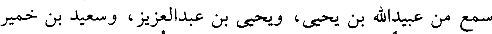
سمع من عبيدالله بن يحيى، ويحيى بن عبدالعزيز، وسعيد بن خمير
File: 001043.gt.txt (if the image is defective, simply delete all Arabic text and the line will be excluded)

وجماعة. وكان عارفا بالعربية. سمع منه غير واحد بقرطبة.
File: 001044.gt.txt (if the image is defective, simply delete all Arabic text and the line will be excluded)

وعمر دهرا؛ توفي ابن ثمان وتسعين سنة، سنة اثنتين أو سنة ثلاث
File: 001045.gt.txt (if the image is defective, simply delete all Arabic text and the line will be excluded)

ثم سار إليه الحسن بن أحمد القرمطي وعاضده، وتحالفا، وأعانهما أحداث
File: 001046.gt.txt (if the image is defective, simply delete all Arabic text and the line will be excluded)

دمشق، وقصدوا جوهرا، فتقهقر إلى الرملة وتحصن بها، ثم تحول إلى
File: 001047.gt.txt (if the image is defective, simply delete all Arabic text and the line will be excluded)

عسقلان وحاصروه حتى أكل عسكره الجيف، ثم خرج بهم جوهر بذمام
File: 001048.gt.txt (if the image is defective, simply delete all Arabic text and the line will be excluded)

أعطاه هفتكين، ومضوا إلى مصر، فتأهب العزيز وسار بجيوشه، فالتقاه
File: 001049.gt.txt (if the image is defective, simply delete all Arabic text and the line will be excluded)

هفتكين بالرملة، فقال العزيز لجوهر: أرني هفتكين، فأراه إياه وهو يجول
File: 001050.gt.txt (if the image is defective, simply delete all Arabic text and the line will be excluded)
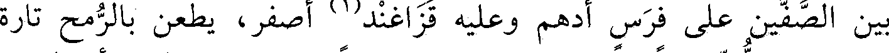
بين الصفين على فرس أدهم وعليه قذاغند(1) أصفر، يطعن بالرمح تارة
File: 001051.gt.txt (if the image is defective, simply delete all Arabic text and the line will be excluded)

ويضرب باللت تارة، فبعث العزيز إليه رسولا يقول: يا هفتكين أنا العزيز
File: 001052.gt.txt (if the image is defective, simply delete all Arabic text and the line will be excluded)

وقد أزعجتني من سرير ملكي، وأحوجتني لمباشرة الحرب بنفسي، وأنا
File: 001053.gt.txt (if the image is defective, simply delete all Arabic text and the line will be excluded)

طالب الصلح معك، ولك عهد الله علي أن أصطفيك، وأقدمك على
File: 001054.gt.txt (if the image is defective, simply delete all Arabic text and the line will be excluded)

عسكري، وأهب لك الشام بأسره، فنزل وقبل الأرض. ثم اعتذر وقال:
File: 001055.gt.txt (if the image is defective, simply delete all Arabic text and the line will be excluded)

أما الآن فما يمكنني إلا الحرب، ولو تقدم هذا لأمكن، ثم حمل على
File: 001056.gt.txt (if the image is defective, simply delete all Arabic text and the line will be excluded)

الميسرة فهزمها، فحمل العزيز بنفسه، وحملت معه ميمنته، فانهزم
File: 001057.gt.txt (if the image is defective, simply delete all Arabic text and the line will be excluded)
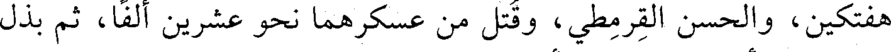
هفتكين، والحسن القرمطي، وقتل من عسكرهما نحو عشرين ألف، ثم بذل
File: 001058.gt.txt (if the image is defective, simply delete all Arabic text and the line will be excluded)

العزيز لمن أتاه بهفتكين مئة ألف دينار.
File: 001059.gt.txt (if the image is defective, simply delete all Arabic text and the line will be excluded)

وكان هفتكين يحب مفرج بن دغفل بن جراح، وكان مليحا في
File: 001060.gt.txt (if the image is defective, simply delete all Arabic text and the line will be excluded)

العرب، فانهزم نحو الساحل ومعه ثلاثة، وبه جراح، وقد عطش، فصادفه
File: 001061.gt.txt (if the image is defective, simply delete all Arabic text and the line will be excluded)

مفرج في الخيل فأكرمه، وسقاه، وحمله إلى أهله، ثم غدر به وسلمه إلى
File: 001062.gt.txt (if the image is defective, simply delete all Arabic text and the line will be excluded)

العزيز لأجل المال، فبالغ العزيز في إكرامه، وإجلاله، وأعاده إلى رتبة
File: 001063.gt.txt (if the image is defective, simply delete all Arabic text and the line will be excluded)

الإمرة مثل ما كان. فحكى القفطي في تاريخه أن العزيز أمر له بضرب
File: 001064.gt.txt (if the image is defective, simply delete all Arabic text and the line will be excluded)

سرادق، وفرس، وآلات، وبإحضار كل من حصل في أسره من جند
File: 001065.gt.txt (if the image is defective, simply delete all Arabic text and the line will be excluded)

هفتكين وحاشيته، فكساهم وأعطاهم، ورتب كل واحد منهم في منزلته،
File: 001066.gt.txt (if the image is defective, simply delete all Arabic text and the line will be excluded)

وركب الجيش لتلقي هفتكين، وسار لإحضاره جوهر القائد، فلم يشك
File: 001067.gt.txt (if the image is defective, simply delete all Arabic text and the line will be excluded)

هفتكين أنه مقتول، فلما وصل رأى من الكرامة ما بهره، ثم نزل في بيت
File: 001068.gt.txt (if the image is defective, simply delete all Arabic text and the line will be excluded)

المخيم، فشاهد أصحابه وحاشيته على ما كانوا عليه، فرمى بنفسه إلى
File: 001069.gt.txt (if the image is defective, simply delete all Arabic text and the line will be excluded)

الأرض، وعفر وجهه وبكى بكاء كثيرا، ثم اجتمع به العزيز ووانسه،
File: 001070.gt.txt (if the image is defective, simply delete all Arabic text and the line will be excluded)
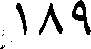
189
File: 001071.gt.txt (if the image is defective, simply delete all Arabic text and the line will be excluded)

وزر لعز الدولة بختيار ابن معز الدولة. وكان ظالما جبارا، فقبض
File: 001072.gt.txt (if the image is defective, simply delete all Arabic text and the line will be excluded)

عليه ثم قتله في حبسه، وله تسع وخمسون سنة.
File: 001073.gt.txt (if the image is defective, simply delete all Arabic text and the line will be excluded)
73 - عبدالله بن عدي، أبو عبدالرحمن الصابوني.
File: 001074.gt.txt (if the image is defective, simply delete all Arabic text and the line will be excluded)

توفي ببخارى في ذي الحجة. وله شيء في الرد على أبي حاتم بن
File: 001075.gt.txt (if the image is defective, simply delete all Arabic text and the line will be excluded)

حبان فيما تأول من الصفات. أخذ عنه يحيى بن عمار وغيره. روى عن ابن
File: 001076.gt.txt (if the image is defective, simply delete all Arabic text and the line will be excluded)

خزيمة وطبقته.
File: 001077.gt.txt (if the image is defective, simply delete all Arabic text and the line will be excluded)

74 - عبدالحميد بن أحمد بن عيسى.
File: 001078.gt.txt (if the image is defective, simply delete all Arabic text and the line will be excluded)

سمع النسائي، وتوفي في شعبان.
File: 001079.gt.txt (if the image is defective, simply delete all Arabic text and the line will be excluded)

75 - عبدالعزيز بن أحمد بن محمد بن أسيد، أبو بكر المديني
File: 001080.gt.txt (if the image is defective, simply delete all Arabic text and the line will be excluded)

المعدل.
File: 001081.gt.txt (if the image is defective, simply delete all Arabic text and the line will be excluded)

روى عن محمد بن نصير، وزكريا الساجي. وعنه أبو بكر بن أبي
File: 001082.gt.txt (if the image is defective, simply delete all Arabic text and the line will be excluded)

علي، وأبو نعيم(1)، وغيرهما.
File: 001083.gt.txt (if the image is defective, simply delete all Arabic text and the line will be excluded)

توفي في سلخ ذي القعدة.
File: 001084.gt.txt (if the image is defective, simply delete all Arabic text and the line will be excluded)

76 - عبدالعزيز بن إسحاق بن جعفر، أبو القاسم الزيدي
File: 001085.gt.txt (if the image is defective, simply delete all Arabic text and the line will be excluded)

البغدادي.
File: 001086.gt.txt (if the image is defective, simply delete all Arabic text and the line will be excluded)

ذكره ابن أبي الفوارس، فقال : كان له مذهب خبيث، ولم يكن في
File: 001087.gt.txt (if the image is defective, simply delete all Arabic text and the line will be excluded)

الرواية بذاك. سمعت منه أجزاء فيها أحاديث ردية.
File: 001088.gt.txt (if the image is defective, simply delete all Arabic text and the line will be excluded)

قلت : يعرف بابن البقال، حدث عن الباغندي، وعلي بن العباس
File: 001089.gt.txt (if the image is defective, simply delete all Arabic text and the line will be excluded)

المقانعي.
File: 001090.gt.txt (if the image is defective, simply delete all Arabic text and the line will be excluded)

قال التنوخي: كان من متكلمي الشيعة، له مصنفات على مذهب
File: 001091.gt.txt (if the image is defective, simply delete all Arabic text and the line will be excluded)

الزيدية، يجمع حديثا كثيرا، وله أخ شاعر مشهور(2) .
File: 001092.gt.txt (if the image is defective, simply delete all Arabic text and the line will be excluded)

77 - عبدالعزيز بن جعفر بن أحمد بن يزداد، أبو بكر الفقيه
File: 001093.gt.txt (if the image is defective, simply delete all Arabic text and the line will be excluded)

الحنبلي، غلام الخلال، شيخ الحنابلة وعالمهم المشهور.
File: 001094.gt.txt (if the image is defective, simply delete all Arabic text and the line will be excluded)

تفقه بأستاذه أبي بكر الخلال، وسمع من عبدالله بن أحمد بن حنبل
File: 001095.gt.txt (if the image is defective, simply delete all Arabic text and the line will be excluded)

عيسى النحوي، وأبو القاسم الداركي، وابن الدقاق الفقيه، وشكوا إليه ما
File: 001096.gt.txt (if the image is defective, simply delete all Arabic text and the line will be excluded)

دهم الإسلام من هذه الحادثة العظمى، فوعدهم بالغزو، ونادى بالنفير في
File: 001097.gt.txt (if the image is defective, simply delete all Arabic text and the line will be excluded)

الناس، فخرج من العوام خلق عدد الرمل، ثم جهز جيشا، وغزوا فهزموا
File: 001098.gt.txt (if the image is defective, simply delete all Arabic text and the line will be excluded)

الروم، وقتلوا منهم مقتلة كبيرة، وأسروا أميرهم وجماعة من بطارقته،
File: 001099.gt.txt (if the image is defective, simply delete all Arabic text and the line will be excluded)

وأنفذت رؤوس القتلى إلى بغداد، وفرح المؤمنون بنصر الله.
File: 001100.gt.txt (if the image is defective, simply delete all Arabic text and the line will be excluded)

وصادر بختيار بن بويه المطيع، فقال: أنا ليس لي غير الخطبة، فإن
File: 001101.gt.txt (if the image is defective, simply delete all Arabic text and the line will be excluded)

أحببتم اعتزلت، فشددوا عليه حتى باع قماشه، وحمل أربع مئة ألف درهم،
File: 001102.gt.txt (if the image is defective, simply delete all Arabic text and the line will be excluded)

فأنفقها ابن بويه في أغراضه، وأهمل الغزو، وشاع في الألسنة أن الخليفة
File: 001103.gt.txt (if the image is defective, simply delete all Arabic text and the line will be excluded)

صودر، كما شاع قبله أن القاهر بالله كدي يوم جمعة، فانظر إلى تقلبات
File: 001104.gt.txt (if the image is defective, simply delete all Arabic text and the line will be excluded)

الدهر!
File: 001105.gt.txt (if the image is defective, simply delete all Arabic text and the line will be excluded)

وفي شهر رمضان قتل رجل من أعوان الوالي في بغداد، فبعث الرئيس
File: 001106.gt.txt (if the image is defective, simply delete all Arabic text and the line will be excluded)

أبو الفضل الشيرازي - وكان قد أقامه عز الدولة على الوزارة - من طرح النار
File: 001107.gt.txt (if the image is defective, simply delete all Arabic text and the line will be excluded)

من النحاسين إلى السماكين، فاحترق حريق عظيم لم يشهد مثله، واحترقت
File: 001108.gt.txt (if the image is defective, simply delete all Arabic text and the line will be excluded)

أموال عظيمة وجماعة كثيرة من النساء، والرجال، والصبيان، والأطفال في
File: 001109.gt.txt (if the image is defective, simply delete all Arabic text and the line will be excluded)

الدور وفي الحمامات، فأحصى ما أحرق من بغداد فكان سبعة عشر وثلاث
File: 001110.gt.txt (if the image is defective, simply delete all Arabic text and the line will be excluded)

مئة دكان، وثلاث مئة وعشرين دارا، أجرة ذلك في الشهر ثلاثة وأربعون
File: 001111.gt.txt (if the image is defective, simply delete all Arabic text and the line will be excluded)

ألفا، ودخل في الجملة ثلاثة وثلاثون مسجدا. فقال رجل لأبي الفضل
File: 001112.gt.txt (if the image is defective, simply delete all Arabic text and the line will be excluded)

الشيرازي: أيها الوزير أريتنا قدرتك، ونحن نأمل من الله أن يرينا قدرته فيك،
File: 001113.gt.txt (if the image is defective, simply delete all Arabic text and the line will be excluded)

فلم يجبه، وكثر الدعاء عليه. ثم أن عز الدولة قبض عليه وسلمه إلى الشريف
File: 001114.gt.txt (if the image is defective, simply delete all Arabic text and the line will be excluded)

أبي الحسن محمد بن عمر العلوي، فأنفذه إلى الكوفة، وسقي ذراريح(1)،
File: 001115.gt.txt (if the image is defective, simply delete all Arabic text and the line will be excluded)

فتقرحت مثانته، فهلك في ذي الحجة من هذه السنة، لا رحمه الله.
File: 001116.gt.txt (if the image is defective, simply delete all Arabic text and the line will be excluded)

وفي يوم الجمعة ثامن رمضان دخل المعز أبو تميم معد بن إسماعيل
File: 001117.gt.txt (if the image is defective, simply delete all Arabic text and the line will be excluded)

العبيدي مصر ومعه توابيت آبائه، وكان قد مهد له ملك الديار المصرية
File: 001118.gt.txt (if the image is defective, simply delete all Arabic text and the line will be excluded)

مولاه جوهر، وبنى له القاهرة، وأقام بها دارا للإمرة، وتعرف بالقصرين.
File: 001119.gt.txt (if the image is defective, simply delete all Arabic text and the line will be excluded)

وفيها أقبل الدمستق في جيوشه إلى ناحية ميافارقين، فالتقاه ولد ناصر
File: 001120.gt.txt (if the image is defective, simply delete all Arabic text and the line will be excluded)

الدولة بن حمدان وهزم الروم، ولله الحمد، وأسر الدمستق الخبيث، وبقي
File: 001121.gt.txt (if the image is defective, simply delete all Arabic text and the line will be excluded)

عز الدولة بختيار، ثم خرج إلى فارس.
File: 001122.gt.txt (if the image is defective, simply delete all Arabic text and the line will be excluded)

وفيها تزوج الطائع شاهناز بنت عز الدولة على صداق مئة ألف دينار.
File: 001123.gt.txt (if the image is defective, simply delete all Arabic text and the line will be excluded)

وفي رجب عدمت الأقوات حتى أبيع كر الدقيق بمئة وسبعين دينارا،
File: 001124.gt.txt (if the image is defective, simply delete all Arabic text and the line will be excluded)

والتمر ثلاثة أرطال بدرهم.
File: 001125.gt.txt (if the image is defective, simply delete all Arabic text and the line will be excluded)

ولم يخرج وفد من بغداد بل خرجت طائفة من الخراسانيين مخاطرة،
File: 001126.gt.txt (if the image is defective, simply delete all Arabic text and the line will be excluded)

فلحقتهم شدة.
File: 001127.gt.txt (if the image is defective, simply delete all Arabic text and the line will be excluded)

وفي سلخ ذي القعدة عزل قاضي القضاة أبو الحسن محمد ابن أم
File: 001128.gt.txt (if the image is defective, simply delete all Arabic text and the line will be excluded)

شيبان، وولي أبو محمد بن معروف.
File: 001129.gt.txt (if the image is defective, simply delete all Arabic text and the line will be excluded)

وفي هذه السنين وبعدها كان الرفض يغلي ويفور بمصر والشام،
File: 001130.gt.txt (if the image is defective, simply delete all Arabic text and the line will be excluded)

والمغرب والمشرق، لا سيما بالعبيدية الباطنية، قاتلهم الله.
File: 001131.gt.txt (if the image is defective, simply delete all Arabic text and the line will be excluded)

قال مشرف بن مرجى المقدسي: أخبرنا الشيخ أبو بكر محمد بن
File: 001132.gt.txt (if the image is defective, simply delete all Arabic text and the line will be excluded)

الحسن قال: حدثني الشيخ الصالح أبو القاسم الواسطي، قال: كنت
File: 001133.gt.txt (if the image is defective, simply delete all Arabic text and the line will be excluded)

مجاورا ببيت المقدس، فأمروا في أول رمضان بقطع التراويح، فصحت أنا
File: 001134.gt.txt (if the image is defective, simply delete all Arabic text and the line will be excluded)

وعبدالله الخادم: واإسلاماه وامحمداه، فأخذني الأعوان وحبست، ثم جاء
File: 001135.gt.txt (if the image is defective, simply delete all Arabic text and the line will be excluded)

الكتاب من مصر بقطع لساني فقطع، فبعد أسبوع رأيت النبي صعلم في النوم
File: 001136.gt.txt (if the image is defective, simply delete all Arabic text and the line will be excluded)

تفل في فمي، فانتبهت ببرد ريق رسول الله صعلم وقد زال عني الألم،
File: 001137.gt.txt (if the image is defective, simply delete all Arabic text and the line will be excluded)

فتوضأت وصليت وعمدت إلى المأذنة فأذنت «الصلاة خير من النوم»،
File: 001138.gt.txt (if the image is defective, simply delete all Arabic text and the line will be excluded)

فأخذوني وحبست وقيدت، وكتبوا في إلى مصر، فورد الكتاب بقطع
File: 001139.gt.txt (if the image is defective, simply delete all Arabic text and the line will be excluded)

لساني، وبضربي خمس مئة سوط، وبصلبي، ففعل بي ذلك، فرأيت لساني
File: 001140.gt.txt (if the image is defective, simply delete all Arabic text and the line will be excluded)

على البلاط مثل الرية، وكان في البرد والجليد، وصلبت واشتد علي
File: 001141.gt.txt (if the image is defective, simply delete all Arabic text and the line will be excluded)

الجليد، فبعد ثلاثة أيام عهدي بالحدائين يقولون: نعرف الوالي أن هذا قد
File: 001142.gt.txt (if the image is defective, simply delete all Arabic text and the line will be excluded)

مات، فأتوه، وكان الوالي جيش بن الصمصامة فقال: أنزلوه، فألقوني على
File: 001143.gt.txt (if the image is defective, simply delete all Arabic text and the line will be excluded)

باب داود، فقوم يترحمون علي وآخرون يلعنوني، فلما كان بعد العشاء
File: 001144.gt.txt (if the image is defective, simply delete all Arabic text and the line will be excluded)

جاءني أربعة فحملوني على نعش ومضوا بي ليغسلوني في دار فوجدوني
File: 001145.gt.txt (if the image is defective, simply delete all Arabic text and the line will be excluded)

حيا، فكانوا يصلحون لي خزيرة بلوز وسكر أسبوعا. ثم رأيت النبي صعلم في
File: 001146.gt.txt (if the image is defective, simply delete all Arabic text and the line will be excluded)

المنام ومعه أصحابه العشرة فقال: يا أبا بكر، ترى ما قد جرى على
File: 001147.gt.txt (if the image is defective, simply delete all Arabic text and the line will be excluded)

صاحبك؟ قال: يا رسول الله فما أصنع به؟ قال: اتفل في فيه، فتفل في في،
File: 001148.gt.txt (if the image is defective, simply delete all Arabic text and the line will be excluded)

(الوفيات)
File: 001149.gt.txt (if the image is defective, simply delete all Arabic text and the line will be excluded)

سنة إحدى وستين وثلاث مئة ومن توفي فيها
File: 001150.gt.txt (if the image is defective, simply delete all Arabic text and the line will be excluded)

1 - أحمد ابن المحدث محمد بن العباس بن نجيح البغدادي، أبو
File: 001151.gt.txt (if the image is defective, simply delete all Arabic text and the line will be excluded)

الحسن، رئيس المعتزلة ببغداد.
File: 001152.gt.txt (if the image is defective, simply delete all Arabic text and the line will be excluded)

ورخه طلحة في ربيع الآخر، وقال: كان رئيس المعتزلة.
File: 001153.gt.txt (if the image is defective, simply delete all Arabic text and the line will be excluded)

2 - أحمد بن محمد بن سعيد بن سهل بن شبرة(1) ، بالمعجمة
File: 001154.gt.txt (if the image is defective, simply delete all Arabic text and the line will be excluded)

والتثقيل، أبو حامد النيسابوري الصيرفي الزاهد الثبت، نزيل سمرقند.
File: 001155.gt.txt (if the image is defective, simply delete all Arabic text and the line will be excluded)

روى عن عمر البجيري، وأبن خزيمة، والسراج.
File: 001156.gt.txt (if the image is defective, simply delete all Arabic text and the line will be excluded)

قال الإدريسي: ثقة، كتبنا عنه، ومات بسمرقند في شعبان(2) .
File: 001157.gt.txt (if the image is defective, simply delete all Arabic text and the line will be excluded)

3 - أحمد بن مسور الأمير.
File: 001158.gt.txt (if the image is defective, simply delete all Arabic text and the line will be excluded)

ولي دمشق للحسن بن أحمد القرمطي المعروف بالسيد عند تغلبة ثانيا
File: 001159.gt.txt (if the image is defective, simply delete all Arabic text and the line will be excluded)

على الشام، وذلك في رمضان. ومات بعد عشرة أشهر، أعنى أحمد(3) .
File: 001160.gt.txt (if the image is defective, simply delete all Arabic text and the line will be excluded)

4 - إبراهيم بن أحمد بن إبراهيم البغدادي البزوري، أبو إسحاق
File: 001161.gt.txt (if the image is defective, simply delete all Arabic text and the line will be excluded)

المقرىء.
File: 001162.gt.txt (if the image is defective, simply delete all Arabic text and the line will be excluded)

قرأ على إسحاق الخزاعي، والحسن بن الحسين الصواف، وأحمد بن
File: 001163.gt.txt (if the image is defective, simply delete all Arabic text and the line will be excluded)

فرح، وجماعة.
File: 001164.gt.txt (if the image is defective, simply delete all Arabic text and the line will be excluded)

وكان من أئمة هذا الشأن، وحدث عن البغوي وغيره؛ قرأ عليه محمد
File: 001165.gt.txt (if the image is defective, simply delete all Arabic text and the line will be excluded)

بن عمر بن بكير، وعلي بن محمد الحذاء، وعبدالباقي بن الحسن.
File: 001166.gt.txt (if the image is defective, simply delete all Arabic text and the line will be excluded)

مات في ذي الحجة(4) .
File: 001167.gt.txt (if the image is defective, simply delete all Arabic text and the line will be excluded)

193
File: 001168.gt.txt (if the image is defective, simply delete all Arabic text and the line will be excluded)

100 - أحمد بن محمد بن أيوب، أبو بكر الفارسي الواعظ
File: 001169.gt.txt (if the image is defective, simply delete all Arabic text and the line will be excluded)

المفسر، نزيل نيسابور.
File: 001170.gt.txt (if the image is defective, simply delete all Arabic text and the line will be excluded)

كان له أتباع ومريدون، وعظ ببخارى فكثر جمعه، وخاف الحنفية من
File: 001171.gt.txt (if the image is defective, simply delete all Arabic text and the line will be excluded)

تغلبه عليهم. كان يحضر مجلسه نحو عشرة آلاف. كتب عنه أبو عبد الله
File: 001172.gt.txt (if the image is defective, simply delete all Arabic text and the line will be excluded)

الحاكم.
File: 001173.gt.txt (if the image is defective, simply delete all Arabic text and the line will be excluded)

101 - أحمد بن محمد بن فرحون، أبو القاسم الأندلسي.
File: 001174.gt.txt (if the image is defective, simply delete all Arabic text and the line will be excluded)

سمع عبيدالله بن يحيى، وأيوب بن سليمان، وطاهر بن عبدالعزيز.
File: 001175.gt.txt (if the image is defective, simply delete all Arabic text and the line will be excluded)

وحدث. وكان ضابطا، وفيه لين(1).
File: 001176.gt.txt (if the image is defective, simply delete all Arabic text and the line will be excluded)

102 - أحمد بن محمد بن المؤمل بن الحسن بن عيسى
File: 001177.gt.txt (if the image is defective, simply delete all Arabic text and the line will be excluded)

الماسرجسي النيسابوري، أبو الحسن.
File: 001178.gt.txt (if the image is defective, simply delete all Arabic text and the line will be excluded)

من بيت علم ورواية، وكان رجلا صالحا. روى عن جده، وأبي
File: 001179.gt.txt (if the image is defective, simply delete all Arabic text and the line will be excluded)

عمرو أحمد بن محمد الحيري. وعنه الحاكم.
File: 001180.gt.txt (if the image is defective, simply delete all Arabic text and the line will be excluded)

103 - أحمد بن مسلم بن شعيب، أبو العباس المديني الأديب.
File: 001181.gt.txt (if the image is defective, simply delete all Arabic text and the line will be excluded)

سمع علي بن سعيد العسكري، ومحمد بن جرير الطبري. وعنه ابن
File: 001182.gt.txt (if the image is defective, simply delete all Arabic text and the line will be excluded)

أبي علي، وأبو نعيم(2).
File: 001183.gt.txt (if the image is defective, simply delete all Arabic text and the line will be excluded)

104 - أحمد بن هلال بن زيد، أبو عمر الأندلسي العطار.
File: 001184.gt.txt (if the image is defective, simply delete all Arabic text and the line will be excluded)

رحل، وسمع من محمد بن الربيع الجيزي، وغيره. وكان حافظا
File: 001185.gt.txt (if the image is defective, simply delete all Arabic text and the line will be excluded)

للشروط، مفتيا عارفا بقول مالك(3).
File: 001186.gt.txt (if the image is defective, simply delete all Arabic text and the line will be excluded)

105 - أحمد بن يوسف، أبو حامد الإسكاف النيسابوري الأشقر،
File: 001187.gt.txt (if the image is defective, simply delete all Arabic text and the line will be excluded)

أحد الزهاد.
File: 001188.gt.txt (if the image is defective, simply delete all Arabic text and the line will be excluded)

صحب أبا عثمان الحيري، ورأى ابن عطاء، والجريري، وصحب أبا
File: 001189.gt.txt (if the image is defective, simply delete all Arabic text and the line will be excluded)

عمر الدمشقي وجماعة. وله سياحات وأحوال وكلام نافع. أخرج في آخر
File: 001190.gt.txt (if the image is defective, simply delete all Arabic text and the line will be excluded)

عمره من بخارى، فحج ومات بمكة في السنة.
File: 001191.gt.txt (if the image is defective, simply delete all Arabic text and the line will be excluded)

225